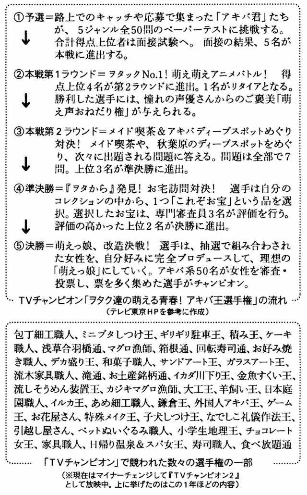
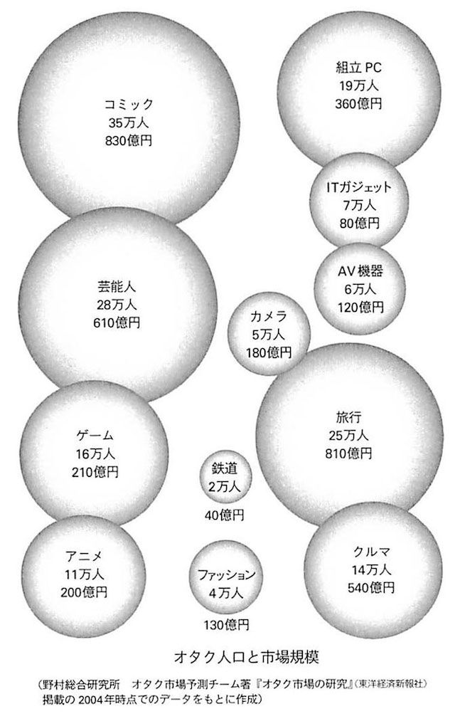
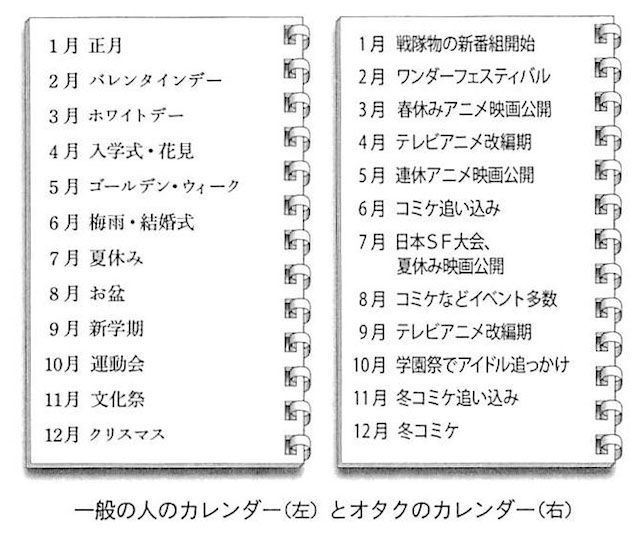
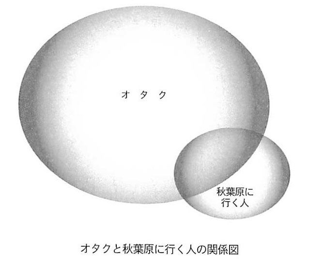
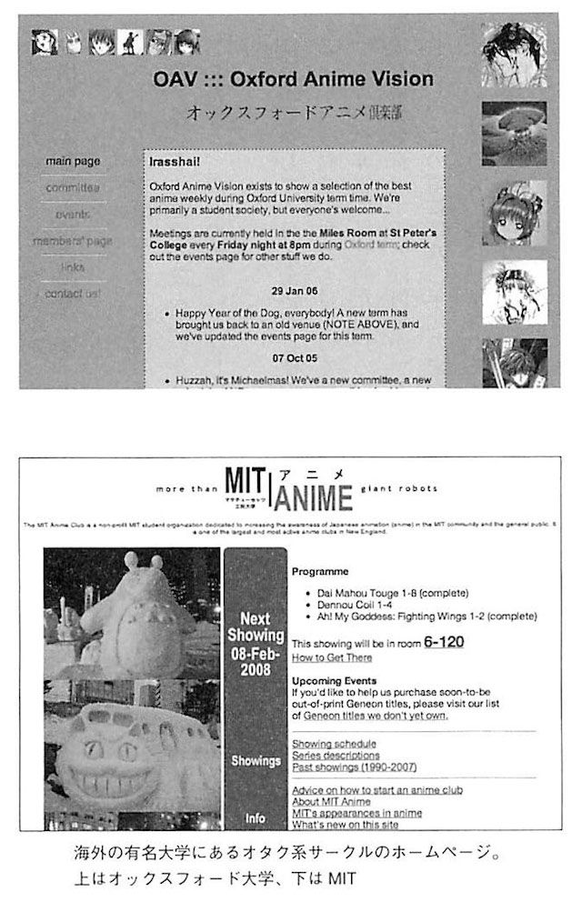
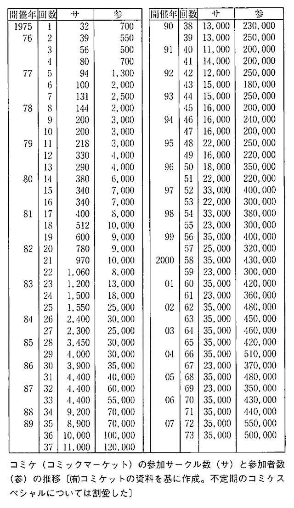
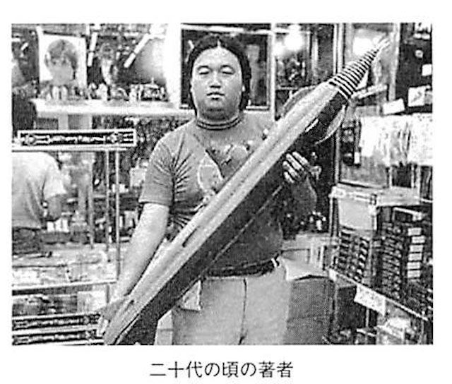
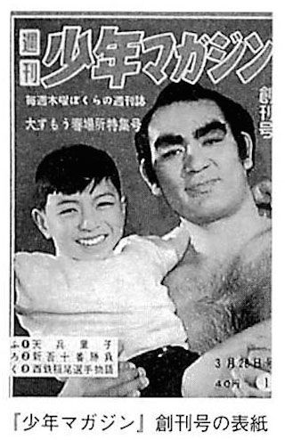
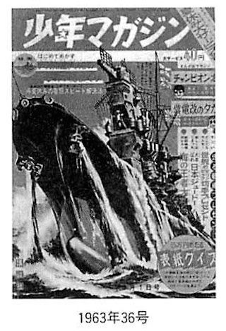
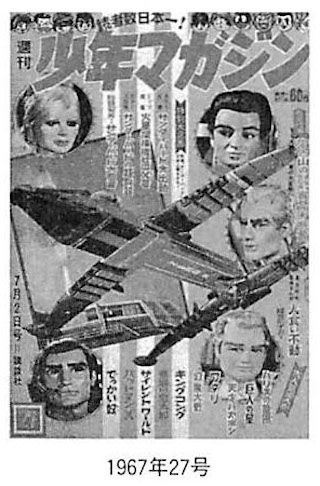

| オタクはすでに死んでいる 電子版 | |
| 岡田斗司夫 FREEex | |
| Rocket Inc (2014) | |
岡田斗司夫 FREEex
この作品は、二〇〇八年四月、新潮社より刊行された『オタクはすでに死んでいる』（岡田斗司夫：著）を底本とし、改題、電子書籍化したものです。仕様上の都合により適宜編集を加えています。
なお、本書のコピー、スキャン、デジタル化等の無断複製は、著作権法上での例外である私的利用を除き禁じられています。本書を代行業者等の第三者に依頼してコピー、スキャンやデジタル化することは、たとえ個人や家庭内での利用であっても一切認められていません。
この本は「オタクと昭和の死」についての本です。
このテーマについて最初に語ったのは、二年ほど前。あるイベントでのことでした。イベントのタイトルは「オタク・イズ・デッド」、つまり「オタクは死んだ」。二〇〇六年五月二十四日に東京・新宿のロフトプラスワンという会場でのトーク・イベントでした。
私は「オタキング」などと呼ばれ、世間やマスコミからはいわばオタクの代表みたいに思われている人間です。『オタク学入門』『東大オタク学講座』『オタク論！』などオタクに関する著作も多く、東京大学でもオタクをテーマにした講義を開きました。また、ＭＩＴ（マサチューセッツ工科大学）など海外での講義や講演もこなし、タイム誌やパリ・マッチ誌などでも「オタクの代表」として取り上げられています。
そのオタキング自身が「オタクはもう死んでしまった」と宣言したのです。私の発言はかなりの衝撃となって、賛否両論の大激論を巻き起こしました。
しかし、それだけの話なら、この前書きを読んでくれている皆さんには関係ない話です。オタク業界がどんな騒ぎになろうとも、ネットやブログ世界でどんな大激論になろうとも、一般社会には関係ない。そう考える人がいるかもしれません。
でも、死んだのはオタクだけではないのです。オタクが成立するためには「高度消費社会」と「勤勉な国民性」の並存が不可欠です。つまり昭和後期型、言い換えると第二次大戦以降の日本という国自体がオタクを生んだ、と私は考えています。そのオタクが死んだと言うことは、消費社会と国民性の二つともが失われてしまった。
「失われた」というと否定的ニュアンスが強すぎるので、日本人は消費や勤勉の向こうにある、誰も知らない次のステージに入ってしまった。
つまり、「昭和は死んだ」ということになります。
このことにはたして、私たちは気づいているのでしょうか？
現在の日本社会のインフラや社会システムの大部分は「国民とは昭和時代の日本人である」という大前提で構築されています。
良く働き、良く貯金し、新製品や贅沢品に飛びつき、老後は年金や退職金で平和に過ごす人たち。
世界でも有数の「離婚率の低い国」であり、子供たちは受験戦争を勝ち抜く戦士であり、画一化と揶揄されるほどの総中流社会。
そんな日本は、もうどこにもありません。システムが変わったのではなく、私たち一人一人が、今やそういう「昭和の日本人」ではなくなってしまったからです。
「最近の若者は不気味だ」「理解できない」という人がいます。とんでもない。私たちがわからない、理解できないのは「最近の私たち自身」です。「昭和の日本人」ではなくなってしまった、自分自身ははたして何なのか？
いつの間に「働くのは損」と考えてしまっているのか？ いつの間に「ずっと子供でいられるのが幸福」と教えてしまっているのか？ いつの間に「自分を守ってくれるのは自分だけ」と身構えてしまうようになったのか？
昭和が死んで、次のステージに入ったことを、なぜ誰も教えてくれなかったのか？
この本は、イベントで語った内容に大幅に加筆・訂正を加えて、書き下ろしました。もともとが「オタク向けの発言」なので、かなりマニアックな言い回しや例示も多く登場します。注意していただきたいのは、そういう「オタク内部の話題」をメインに進めるからといって、「自分には関係ない」と決めつけないでいただきたいのです。
「昭和の死」「日本の変化」という問題自身、大きすぎて語ることも受け取ることも不可能である、と私は考えます。一人の人間のキャパシティとして、「大きすぎる問題定義」は受け取れない。受け取るためにはそれぞれの事象を単純化・モデル化して扱うしかないけど、単純化すると単なる「昔はよかった」「最近の若者はケシカラン」という意味のない繰り言になってしまう。
なので、もっと扱いやすいサイズの問題を軸に論を進めたいと思います。「日本人論」としては巨大すぎて語ることも受け取ることもできない問題だけど、「オタク論」というパーソナルで卑小な切り口なら、抽象的な話やお説教に逃げ込まずに語ることができる。そう考えて、本書を執筆しました。
オタクは死んで、昭和も死んで、それでも私たちは生き続けなければいけません。
最初は「オタクが変わってきた」という話であり、それは次第に「オタクを生み出した土壌である日本の変化」へと繫がり、最後には「その中で私たちオタクや非オタク、つまり日本人はどう生きればいいのか」までを、かろうじて視野に入れながら話を進めたいと思います。
いえ、話を急ぐべきではありませんでした。
まずは、身近な変化、私個人の体験したほんの小さな違和感からはじめましょう。
この本を書くきっかけになったのは、いくつかの「違和感」でした。最初の違和感は、『ＴＶチャンピオン』というテレビ東京系の番組に出演したときの「何かヘンだ」という感じです。
ご存知の方も多いでしょうが、この番組は、あるマニアックな分野での技能や知識を候補者たちが競い合い、一人のチャンピオンを選出するというものです。「ラーメン王」や「和菓子王」から始まり、「金魚すくい王」だの「ミニブタしつけ王」だのとどんどんテーマは細分化されています。回によって技能が問われることもあれば、知識中心のこともありますが、いずれにせよ毎回、ある分野のチャンピオンを選出している番組です。
その番組の中で二〇〇五年九月に放送されたのが「アキバ王選手権」でした。番組の公式ＨＰによると、こんな選手権です。
「全国のヲタクたちの聖地、秋葉原。今回は、アニメ、声優ヲタク、フィギュアマニアなど、日々秋葉原に集うアキバ通のアキバ君たちが大集結。秋葉原をこよなく愛し、最強の萌え萌えバトルを制するのは誰か？
選手はアニメ関連の問題や、メイド喫茶など秋葉原のディープスポットにまつわる問題に答える。また、選手のお宅を訪問。自分のコレクションの中から、「ヲタから」（お宝：これという一品）を紹介してもらい、その評価を競う。
アニメの声優など、萌え萌え有名人が多数出演。マニアックに萌える１時間30分に乞うご期待」
要は『電車男』以降、すっかりおなじみになった秋葉原に集うオタクたちを競わせて、「王者」を決めようという趣向です。
これに私は審査員として出演しました。私が審査したのは準決勝で、出演者が三人に絞られている状態でした。
こちらとしては、「アキバ王選手権」でそこまで絞られているのなら、かなりすごいやつがくると思うわけです。何せ普段からオタクを集めているような番組で、わざわざ「アキバ王」を決めようとしていて、しかもすでに候補者はほんの数人という段階です。普通に考えて、とんでもないオタク中のオタクがいるはずでしょう。

ところが、期待はまったく外れてしまいました。収録場所にいた「王の候補者」たちは、なんというか、言い方は悪いけれども、そこらへんにいる普通のダサい兄ちゃんだったのです。
まあダサいと言ったら失礼かもしれませんが、ごく普通にアニメやゲームの専門学校ならば各クラスに三人ずつぐらいいそうな人。そこで、あれって思ったわけです。
番組の中では、当然ながら彼らはオタクの中のオタク、すごいオタクみたいな扱いをされています。しかし、こちらとしては何か違和感がある。
彼ら自身は会って話すと、非常にいい青年でした。いい奴だなぁ、と普通に思えました。が、それが「オタクとしてすごい」ことなのかなぁと、疑問に思えてならなかったのです。
一人の青年は、ある声優さんのファンだということでした。
「すごいファンです、ぼく、彼女のこと応援したいんです！」と彼は言います。
「そんなに応援したいんだったら、自分でイベントやったら？」と思わず彼に聞いていました。
声優さんを呼ぶこと自体は、あまりコストがかかりません。たとえば、どこかのレコード屋さんをカンバンにするかとか、どんなイベントを組むかによって、別に大学生でも何でも、声優さんというものは、呼ぼうと思えば呼べるわけです。
「イベントに並ぶんじゃなくて、自分でイベント主催すれば声優さんとより近づけるんじゃないの？ 声優って六万円くらいギャラ払えば来てくれるでしょう。グッズに払う金があれば、そっちに使えばいいじゃない。ファンが自分たちの力でやるイベントって必ず向こうにも喜んでもらえるよ。そのほうが応援になるじゃない」
私としては悪気もなく、思ったことを言っただけなのですが、言われた彼の方はといえば、もう固まってしまったわけです。そんなこと考えもしなかった、もしくはできるはずない、というのが彼の気持ちだったのでしょう。彼はショックを受けたようです。
「そんなことしていいんですか？」
と聞いてきました。
実はこの反応に、私は私でショックを受けていました。「イベント主催という道もあるでしょうが、私は追っかけを選びたい。これは私の意思です」というのならば理解できるのです。しかし、彼には自分でイベントを主催するという発想がなかった。「えっ、今のオタクはこれができないのか」と。これが最初に覚えた違和感だったのです。
彼には、こう答えました。
「いいに決まってんじゃん。相手は王子様や王女様じゃない。向こうもビジネスなんだから、呼んであげたほうが喜ぶんだよ。君が六時間並ぶことより、君が六万円払ってイベントをして一〇〇人のファンを集めるほうが彼女にとってもプラスになるんだ」
彼は「うーん......」と考え込んでいました。
読者の方は、「そんなに簡単に素人が声優を呼んだりできるの？」と思われるかもしれません。しかし、実際に声優をたくさん抱えているプロダクションの人に聞いてみると、
「学園祭などで呼んでいただくことは結構ありますよ。ギャラは国民的人気アニメの主役クラスで三〇～五〇万円、実力派クラスで一五～二〇万円」
とのことでした。「アキバ王」候補者が呼ぼうとしているのは、かなり若手の人だったので、六万円は妥当な金額でしょう。彼らが個人で呼べないギャラでは決してないのです。
その場にいる別の声優ファンとも話してみました。その青年は「私は◯×さんという声優の一番のファンであり続けたい」と言います。彼とはこんな会話をしました。
「そうか、じゃあ君が一番のファンだとして、何をするんだ」
「彼女の魅力を皆に伝えようと思います」
「偉い！ それが一番のファンだ。じゃあそうやって彼女のファンが増えたらどうする？」
「その中で一番のファンになります」
「え？ どうしてそうなるの？ ファンが増えれば君以上に熱心な人も出てくるだろう。一〇〇人の中では一番でも、一万人の中では一番になれないよ。それでもあえてファンを増やそうというのがファンとしての生き様じゃないの？」
彼は黙ってしまいました。でもここで言ったのが私の本音です。
私の思うオタクは、「なにかを『好き』という気持ちを抑えきれずに人に伝えてしまう人」でしたが、彼らにとっては「自分が楽しいのが大事」であるようでした。
この番組で覚えた違和感はもう一つ。「持っているお宝を出してください」という審査がありました。ところがそれぞれの候補者が持参したお宝が、なんだかんだと本人たちは解説をするのですが、「買ったもの」ばかりだった。
もちろん限定品であったり、入手難易度が極端に高かったりするわけで、お宝には違いありません。
でも所詮はお金で買えるものです。それを自分が声優が好きであることや、オタクであることのシンボルとして、「お宝です」と出す姿、それも私にはかなりショックでした。
ちなみに候補者の中で、私が「あ、この人がいちばんいいな」と思ったのは、少なくとも同人誌を作っている人でした。
何が「いいな」だったかといえば、自分が本当に好きなものがあって、そのファンであるということを周りに知らせようとしているところ、その姿勢に共感できたからです。
ところが彼以外の人は、自分に好きなものがあっても、それを自分の中に溜め込むことしかできなくて、外に発散することをしない。だから声優のイベントを自分でやれば、と提案すると、「とんでもない」という反応になる。外に発散することは彼の想像外の行為だからです。
「君がいることによって、その声優さんはまったく得しないよ。商品は売れるかもわかんないけども、君がいるおかげでもっとファンが増えたりする、とかいうことがないじゃん」と私は思いました。
本当にこういう人が「アキバ王」でいいんだろうか？
オタクの中のオタクというのはこういう人のことだったんだろうか？
これが私の覚えた違和感でした。
二件目は、その年末の話です。
ＮＨＫの『真剣10代しゃべり場』という番組がありました。一〇人程度の十代の男女が出てきて毎回一つのテーマについて議論をする番組です。
「学歴は大切か」とか「いじめをどうするか」とか、まあ青少年版『朝まで生テレビ！』みたいなものです。参加者の誰か一人がその回のテーマのようなこと、相談を提示し、それについて皆が議論するという形式です。メンバーは三ヶ月ごとに交代されています。この場に、毎回一人は大人がゲストというかご意見番のような形で参加します。私も何度か呼ばれたことがあるのですが、その回は「〝普通〟ってなんですか」というタイトルで、「オタク」がテーマでした。
相談者はＫ君という十八歳の男の子でした。彼はアニメの専門学校を出て、声優になりたいそうです。そして彼はこう主張しました。
「俺はオタクだ、美少女アニメが好きなんだ、みんな、そんな俺のことを認めてくれ」
と、こんな調子で本人は熱く主張するわけですが、その後の話を聞いていても他の十代の出演者とすら話が嚙み合わない。それも無理もありません。
当初、Ｋ君の相談もしくは主張を聞いた私は、「自分はアニメファンで、みんなが偏見をもって変な目で見ているから、そんな目で見るのはやめてくれ！」みたいな話なのかなぁと思っていました。ところが彼の話を聞いてみるとそうではありません。彼は周りに自分がアニメ、とりわけ美少女アニメが好きであることを言っていないのです。彼の論理（？）はこんなものでした。
「俺は美少女アニメファンであることを隠して今日まできた。なぜ隠しているかといえば、きっと言えば、みんなに変な目で見られたり、いじられたりするに決まっている。だから言えないんだ」 わからないわけでもありませんが、いささか被害妄想めいた論理です。そして彼は、結論としてこんな主張を始めました。
「こういう世の中が悪い！」
「アニメを見るというようなことが、当たり前でもいいじゃないか！」
「アニメを見るというようなことで、人を差別しないでほしい！」
これに周りのみんなは驚いてしまったわけです。彼らの言い分はこうです。
「だっておまえアニメ見るってみんなに言わなかったから、俺たち差別しようがないよ」
「今日初めて言って、差別しないでほしいって言われても、俺たちも困る」
どう考えても周りの意見が正しい。私も、そりゃそうだろうと思いました。
これは彼が口下手なのか、それとも周りのみんなのほうが落ち着いているのか、どっちかはよくわかりませんでした。ただし、このときも「オタクって最近、変なことになっちゃってるなぁ」と思ったわけです。
この二つの番組出演をきっかけに、私もじわじわと考えるようになってきました。
それまでも「いや～、オタクももう終わりだよ」とか、冗談で言っていたことはありました。しかし、それはあくまで「最近のオタクと言ってる若者は、俺にはわかんないねぇ」とか、「アキバで萌え萌え言ってるヤツは俺には関係ねぇよ」みたいな、まあ、わざとオッサンぽい発言して遊んでいるという意味合いが強かった。どこか、こちらにも余裕があったし、本気ではなかったところがありました。
つまり、頭の中で構造的に「あれっ、オタクってもう終わってるんじゃないの」みたいな危機感までは、持ってなかったのです。
しかし、二つの番組での経験から「本当に終わっているのでは」と真剣に思うようになってきました。
『ＴＶチャンピオン』に「アキバ王」として名乗りを上げて出演する、というのは、なんだかんだ言って、テレビ番組用に演出されたとはいえ、テレビ局が認める一番すごい奴のはずでした。ところがどうもそんなにすごくない。
『真剣10代しゃべり場』のＫ君に至っては、「俺はアニメを見ている、で、それは隠してる。なんで隠すかっていうと、おまえらがどうせなんか言うからだ、俺が隠さないで済む世の中を作れ！」という無茶苦茶さです。キャラクターとして面白いといえば面白いけれども、そんな主張をわざわざＮＨＫで言うかあ？ という感じです。しかし、そんな自分を、Ｋ君は「オタク」だと思っている。
さて、彼らは本当に私の思っている「オタク」なのだろうか。違和感から大きな疑念が生まれてきたのです。
「アキバ王選手権」でもしきりに使われていた「萌え」という言葉があります。
オタク―秋葉原―萌えというのは、最近ではセットになって使われている言葉です。広辞苑などでは「草木が萌える」といった意味でしか使われていませんが、ご存知のように今となっては「萌え」はオタクを語る上で欠かせない用語となっています。
ネット上の百科事典、「ウィキペディア」で「萌え」を調べると、その使用法から語源まで随分長い説明が出てきます。あまりに長すぎてここでは引用しきれません。解説項目の一覧だけでもこれです（二〇〇八年三月現在）。
１ 概要
２ 古典的な用法における「萌え」
３ 「萌え」の統語論・形態論
４ 「萌え」の意味論・語用論
５ 「萌え」の成立・普及
５・１ 発生・成立に関する説［・継承説（同音異義語「燃え」から変化したとする説）／・継承説―誤変換説／・継承説―意図的な誤用説／・新規発生説］
５・２ 伝播・普及に関する説［・パソコン通信説／・雑誌の投稿欄説／・ゲームセンター等の雑記帳説／・鉄道駅の掲示板説］
５・３ 特定の作品・キャラクターを起源とする説［・「恐竜惑星」萌説／・「セーラームーン」土萠ほたる説／・「太陽にスマッシュ!」高津萌説］
６ 「萌え」の社会現象化
７ 萎え
８ 関連項目
「萌え」で始まる項目［・萌えアニメ／・萌え絵／・萌え絵師／・萌え株／・萌え擬人化（擬人化）／・萌え言語／・萌えスロ／・萌え属性／・萌えフォビア／・萌え要素］
「萌え」を含む項目［・フィギュア萌え族／・皆集萌え］
その他［・燃え（同音異義語）／・二次元コンプレックス／・フェティシズム／・そっち系／・キュンキュン／・あやしいわーるど／・タン／・わび・さび／・10月10日（主にネット上で「萌えの日」とされる。）］
９ 外部リンク
とこんなふうに、とにかく長いので興味のある方はご自分で見てみてください。
テレビでオタクが扱われる際には、美少女やメイド喫茶のメイドあたりに「萌え～」と言っている眼鏡の男子が登場しないことはありません。今では多くの人が「オタクというのは、若い女の子、ときには幼女に対して『萌え～』と言って発情している気持ち悪い男子である」と思っていることでしょう。
ところが、オタキングと呼ばれている私は「萌え」については、「あんまりわかんない」ということになっています。ここでなぜ「あんまり」とか「なっている」と言ったかといえば、「全然わかんない」というわけではないからです。オタクとは無縁の人たちよりはわかっているし、概念として一般の人向けに過不足ない解説程度ならできるレベルでは理解している。
ただし、物事を評論するときには「かなりわかって」ないとまずいんです。で、「萌え」に関しては自分なりに納得できる「かなり」というレベルには達していない。そう思うから「あんまりわかんない」と書いたわけです。
おそらく今の「萌え～」に抵抗がないオタクお兄さんたちから見れば「その程度ですか」というくらいでしょう。その程度にはわかっているけれども、私の基準では評論できるまでの段階ではない。だから、もとに戻って「あんまりわかってない」と思っていただいて結構です。
さて、ここで堂々と「あんまりわかんない」と書けるのは、そもそもそれが、オタクであることと本質的にはあまり関係がないと思っているからです。「実は興味がない」と言い換えれば、より正直かもしれません。
ところが正直に「興味がない」と言うと、ネットでは批判や攻撃の対象になるのです。「岡田は萌えがわからない」「あいつは本当のオタクじゃない」と揚げ足を取るようにネットに書き込む人がいるわけです。こういう言い方をする人は、現在では珍しくありません。
その言い方から察するに、彼らにとっては「オタク」は「萌え」をきちんと理解していないといけないようです。
もちろん、その人がどのように「オタク」なり「萌え」なりを定義して、そういう意見を述べてもそれは全然かまいません。しかし私は、この論法に不思議さを感じてしまうわけです。
「オタクの定義は、いつのまにそんなに排他的になってしまったのだろうか？」と。
この疑問（もしくは違和感）が今ひとつよくわからん、という方のためにもう少し説明しましょう。
たとえば、ドイツ軍好き、という軍事オタクたちがいます。
私が「俺はティーガーⅠ（第二次大戦にドイツ軍が使用したⅥ号戦車・別名タイガー戦車のこと）のこととか、よく知らないから」って言ったとしても、ミリタリー好きのオタクたちは「岡田はオタクじゃない」とは絶対言いません。
なぜならミリタリー好きのオタクたちには常識があるからです。その常識とは、つまり、「俺たちはミリタリーファンであるから、ミリタリーの世界の中ではたとえば、ドイツ軍のタイガー戦車とか八八ミリ砲のことがわかんなかったら『おまえ、なんだ？』って話になるけれども、あんたはその世界じゃないんだ。同じオタクの住人でもあんたはジャンル違いだから、タイガー戦車のことまでわからなくて当たり前だよな」というものです。私と話をするときには、彼らにはその常識が働くわけです。
同様に彼らと私が話す際、仮に彼らが「シャア少佐」を知らなくても、私は驚きません。「シャア少佐」というのはアニメ『機動戦士ガンダム』に登場する人気キャラですが、ハイレベルのオタクであればあるほど、自分の興味外の事に関しては驚くほど無関心です。
だから「シャア少佐」であれ「しょこたん」であれ、他ジャンルのオタク知識・見識など、詳しくなくて当たり前。それでも世間から見ればお互い立派なオタク。
それが私のオタク観だったのです。
ところが、前述の萌えオタクたちは、私が「萌えはあんまり興味がない」と言ったことに対して、「え？ お前はオタクなのに萌えがわからないのか？ なんでだ？」という反応になります。
これは明らかにおかしな話です。
ここにオタクという広大な「大陸」があるとします。そこにはマンガ好きもいれば、アニメ好きもいるし、ゲーム好きもいる。モデルガン好きもいれば、アイドル好きもいるし、鉄道好きもいる。
それぞれの人たちは、それぞれ好きなものを持っていて、一つのジャンルがわからなかったからといって、他の人が「お前はオタクじゃない」ということはないはずです。
これが「おまえはミリタリーファンじゃない」「おまえは鉄道ファンじゃないな」という議論ならば理解できます。しかし「萌えに興味がない」ことで、「おまえはオタクじゃない」って言われ出したのです。
「オタキング」と呼ばれ、「アキバ王選手権」の審査員である私が、そんな理由で「オタクじゃない」と言われるようになってきた。この傾向がここ数年の「オタク・ブーム」以降、顕著になりました。
いや、別に「オタクじゃない」と言われるのは全然かまわないんです。でも鬼の首を取ったかのようにそう言われたときに、「え？ いつのまに『萌え』という人たちがオタクの中心にいることになったの？」という違和感が、すごくありました。そして、この違和感がそのままずーっと今も続いている状態なのです。

「お前なんかオタクじゃない」という人たちのメンタリティも気になります。簡単に人を排除する、その感覚です。ここには自分たちが真ん中にいると信じて疑わない感覚があります。
これは私の考えでは、どちらかというと私たちオタクがあまり持っていないメンタリティだったはずなのです。むしろ、オタクである私たちを差別する人が持っていたメンタリティだったと思うのです。
差別する側というのは、世間と一緒にワールドカップで盛り上がったり、恋愛こそが世の中のすべてだと思ったり、十二月の末というとコミケ（コミックマーケット）ではなくてクリスマスだと思っている人です。
こういう世の中の「普通」の人たちの目には、「十二月といえばコミケだね」というオタクたちは奇異に映るはずです。「普通」の人たちにとっては「十二月末って言ったらクリスマスでしょ、当たり前でしょ、それが若者でしょ、え、そうじゃないの？ 気持ち悪い！」となります。これまでオタクたちは、さんざんそうしたことを世間で言われてきたはずです。
そういう「他者を差別するような人たち」は、私たち以外の「普通」の人であって、私たちオタクというのは、そういうところからズレたところにいるはずだったのです。優しさというと安易ですが、そういう心の大きさを持っていた。
だから、オタク的なジャンルで多少おたがいずれたことを言っても、「おまえなんかオタクじゃない！」という差別はしない。なぜなら、すでにオタクであることで「普通」の人たちからは差別されて辛酸を嘗めているわけで、さらにオタクの間で細かいことで差別をしても仕方がなかった。だからオタク全体を見れば、一般的には心の大きい人が多かったはずなのです。
ところが、どうも最近の「萌えブーム」以来、なんか違うような風が吹いてきたぞ、変だなーって思わざるをえない状況になってきました。
まあ、ここまでは言葉を選びながら書いていたわけですが、ぶっちゃけて言えば、「えっ、オタクって、頭が良いと思ってきたんだけれども、最近はバカがいるんだ」っていうのが率直な感想だったのです。
まるで「普通」の人と同じように、年末はクリスマスが当たり前、ワールドカップはみんな見るものだと思っているようなオタクがいっぱいいる。彼らにとって「オタクは萌えがわかって当たり前」ということです。これは非常にショックでした。
テレビに代表されるメディアが作った、特殊な「オタク」像のステレオタイプを自らなぞっているような人たちが増えていた。これもまた「オタク」に関する違和感の一つでした。

このような違和感から考えた末に、本書の主題になる「オタクは死んだ」という結論に辿りついたわけです。
ここで断っておきたいのはマンガやアニメやゲームなどの、個々の「オタク作品」が死んだ／ダメになったと言っているのではありません。それぞれの作品は相変わらず存在していますし、それぞれのファンも楽しく生きているわけです。
ではなにが「死んだ」のか。
それは従来のオタクが共有していた共通意識です。それが喪失されたということなのです。
「俺たちオタクだから」と思っている人たちが共通して持っていた意識、共通基盤みたいなものが急激に崩れてきた。先ほど使ったたとえで言えば「みんなが住んでいた『オタク大陸そのもの』が沈んだ」ということでしょうか？
オタクたちが住んでいた大陸が沈み、いまやオタクたちは「ジャンルごとの避難船に分乗している難民」なのです。
「あれ？ 俺たちの住んでいるところ、沈んじゃったよ」みたいな、そんな感じがすごくする。アニメとかフィギュアとかミリタリーという、各民族が平和に共存していた大陸がなくなっちゃったなあ、ということです。
「俺たちオタクだから、仲良くやっていこうよ」みたいな感覚や時代が終わってしまったのです。アトランティス大陸がなくなってしまった。
旧約聖書で例えれば、バベルの塔のようなものです。かつて言葉は一つだった。ところが塔を作ったら神様が怒ってしまった。バベルの塔が崩れて、みんなお互いに言葉が通じなくなってしまった。そして人はバラバラになって、人の心は二度と通じ合わなくなりました。
かつてオタクは一つだった。ところが、ネットを作りブログができてブームを迎えて「萌え」と言い出した頃から、急速に互いの言葉が通じなくなった。そしてオタクはバラバラになって......、と似たような話になるわけです。
ひょっとすると私だけが誤解していたかもしれないけども、「私たちオタク」と自称できたんです。「オタクという共通概念」がなんとなくあったと思うのです。
好きなジャンルや作品は違っていても、「世間とは違う生き方をしているオタク」という一体感みたいなもの。世間がクリスマスとはしゃいでいるときに「俺たちはコミケがいい」と言って団結できる、そういう「世間から外れたもの同士の仲間感覚」みたいなのがあった。
今のたとえを使っても「でも俺、コミケ行かないから関係ない」と思わない、そういう意識。
というような、なんとなく共有・共通している文化みたいなものが、なくなってしまっていたのです。
バベルの塔崩壊以降に、共通の言葉がなくなって、とうとうお互いの言っていることがわからなくなった。自分が好きなジャンル以外の人たちの面白い話っていうのが、じわじわとわからなくなってきた。
かつては、自分はマンガが好きで、アニメのことをよくわかんなかったけれども、アニメのやつらとは仲間だよと思っていた。分野は違ってもオタク同士だから、と思えていた。だから好きのベクトルは別でも、オタク同士には会話が成り立ったのです。
ところがそうではなくなってきた。マンガ・オタクがアニメ・オタクを見ていても、どうも仲間と思えない。自分はネット・オタクだと思うが、ゲーム・オタクとは感性が違う気がする。そんな気分が広がってきたのです。
それどころか同じ鉄道オタクでも、路線や車両に「萌えキャラ」と言われる女の子のシンボルキャラをのっけて遊んでいる人と、純粋に鉄道の写真を撮っている人では話が通じなくなってきた。
つまり、「俺たちは同じだ」っていう感覚よりも、「俺たちとあいつらとは違う」っていう差異のほうがどんどん気になりだしている。そういうオタクが増えてきた。だから、すぐに「あいつはわかっていない」と排除をしたがる。それが現状だと思います。
これが「オタクが終わりつつある」という本質なのです。
さて、ここまでの話については、以下の突っ込みが入るはずです。
「お前の言うオタクは、お前の思い込みで定義したものにすぎないだろう。自分のイメージ通りじゃないオタクが増えたからといって、『死んだ』というのはおかしい」
ある意味で当然の指摘です。ですから、ここでいったん「オタクの再定義」を試みてみましょう。むろん、ここから述べることも、私の考えるオタクの定義に過ぎません。岡田斗司夫は、オタクをこうだと思っているという考えです。
これを当てはめだすと日本に何人オタクがいるのかも、よくわかりません。ともあれ、世間はオタクをどう見ているか／定義しているか、その現状と変遷を見ながら、私の考えを述べていきます。
まず辞書的な定義はどうなっているか。『広辞苑』（第六版）では、「（多く片仮名で書く）特定の分野・物事にしか関心がなく、その事には異常なほどくわしいが、社会的な常識には欠ける人。仲間内で相手を『御宅』と呼ぶ傾向に着目しての称」とあります。
ネット百科事典ではもう少し詳しく書かれています。「はてな」と「ウィキペディア」に掲載されている定義を見てみましょう（二〇〇八年三月現在）。
まず、よりマニアックな「はてな」はこうです。
【オタク】
１．中森明夫氏の造語。当時は「おたく」と表記（後略）。
２．現在は、主に20代以降の、アニメ・漫画・ゲーム・アイドルなどを愛好する人（たち）のことを指す。
３．以前は、特定の趣味分野に生活の時間や所得の多くをかける人（たち）のこと。一般層が使用する、一見矛盾した「アウトドアおたく」的表現はここからくる。
４．元々ロリコン漫画誌から発せられた造語の為、本来は（性的表現も含む）コアな漫画・アニメマニア（特に男性）を指す蔑称。
５．「ファッションに関心が無い、自室にこもりがちな」暗い人物への蔑称として使用されることもあった。
中森氏の造語、という説は根強いのですが、厳密にいえば事実とは異なります。八〇年代前半にはＳＦファンやアニメファンの間で、相手のことを「おたく」と呼ぶという現象はすでに見られていました。中森氏は、そうした現象を一九八三年にロリコン誌『漫画ブリッコ』で指摘したということです。
ともあれ、ここに書かれていることは、『広辞苑』の定義とそうずれはありません。続けて「ネクラ」とか「連続幼女殺人事件」といった要素が出てきます。引用を続けます。
・ところが、Ｍ君事件（＊）で、その被告の趣味性の異常さからキーワードを探していたマスメディアがこの言葉に飛びつき、瞬く間に流行語となる。以降、その言葉に対するマニアへの迫害を恐れた中森と大塚との歴史的な和解もあり、ネガティブイメージを払拭するために「オタク趣味」を自らアピールする芸能・文化人も現われ、徐々に差別的用語から、主にインドア志向な趣味に精通する自分をアピールするキーワードに変化していった。（＊著者注）一九八八～八九年の東京・埼玉連続幼女誘拐殺人事件の容疑者名（宮﨑勤）より、こう呼ばれる。
そして、私についての記述も登場します。
・もともとＳＦマニアで、同時に宇宙戦艦ヤマトなどのアニメにも魅せられた岡田斗司夫は、アニメを認めない古参のＳＦマニアからアニメを擁護する立場にあった。そのような世代間の対立は、機動戦士ガンダム放映時にピークを迎えた。岡田がオタクこそ最強だと主張し続けるのは、そのような背景があったからなのかもしれない。
上記の事件がきっかけでいろいろな論客（批評家、精神科医、芸能人など）がアニメやオタクそのものについて言及し出すようになり、「新世紀エヴァンゲリオン」のブレイクもそうした動きに拍車をかけた。
・その後、自らオタクを宣言（告白・自称）する人が大勢増えてきたのだが、それが過去にオタクであるがために辛酸を舐めてきた世代にとっては自嘲的であるのかもしれない。以前には「オタクとは何か」という論争は内輪受け（つまり岡田の一人勝ち）しかなかった。ここ最近になってそういう問いに明確に答える必要性が出てきたのかもしれない。
「ウィキペディア」のほうの定義は一般向けだけあって、もうすこし範囲が広いようです。引用してみます。
おたくとは、社会的認知度が高くない趣味に傾倒する人の一つの類型またはその個人を示す言葉である。
おたくには狭義と広義があるが、現代では区分が明確では無い。このため、定義などでは広義を含めて、歴史的経緯（後述）では狭義に関して主に説明する。
日本では主に、初期（１９８０年代）の頃にはその出展元にも関連して、対象年齢を過ぎたと世間的に認知されている趣味（アニメや漫画、アイドル、ゲーム、コンピュータなど）をもつ独身の日本人男性に対して用いられることが多かった。しかし近年、外国人、日本人女性、そして既婚の男性に用いることも多くなり、また前述以外の、ややカルト的な趣味、インドア系の趣味、また学術的な趣味を持つ人に用いられることも多くなってきている。ただし、女性や外国人男性がこれらの趣味をもつ場合には「○○好き」「□□マニア」と呼称されることが多く、現在でもその傾向は続いている。また日本人男性でも50代以上の者、またハイカルチャー・アカデミックな学術分野に没頭する人が、オタクと呼ばれることは少ない。その一方で、学術分野の専門家の中でも、理学・工学系の研究者や、クラシック音楽、現代音楽、現代美術などの芸術の愛好者に限り、オタクと呼称することが多いとの意見もある。
ざっとこういうことになっています。さすが「ネットで誰でも編纂に参加できる百科事典」を謳うだけあって、「客観的なオタク史」や「中立的なオタク定義」では第一級の資料と言えるでしょう。興味のある方はぜひご覧になってください。
いずれの定義も読んでいてそう違和感はありません。歴史的経緯も間違えていないように思います。その一方で、最近世間で思われている「オタク」の定義はちょっと違うものになってきています。おそらく現在は、次の三つの要素で語られていると思われます。
最近、よく世間で言われるオタクというのは「アキバ（秋葉原）にいる人」です。アキバ系などという言葉もすっかり定着したようです。しかし、当たり前ですがオタクがそこに住んでいるわけでもないですし、そこに行かないとオタクになれないわけでもありません。オタクの多くがそこに買い物に行っているというだけのことです。
確かに、平日に秋葉にいる人を一〇〇人捕まえたら七〇人くらいはオタクかもしれません。しかし逆にオタクを一〇〇人集めても、たぶん一〇分の一も秋葉原に行ってない。そもそも地理的条件もありますから、地方の人は滅多に行けない。分野によっては別に行く必要もないので、行きたいと思うことさえありません。
オタクたちにとっても秋葉原は買い物に便利だから行く、ということであって、それがアイデンティティーとなるものではありません。ですから、「アキバはオタクの街」「聖地」という捉え方には疑問を感じます。オタクとはアキバ族だとか、池袋族だというのは、必要条件かもわかんないけれども、十分条件じゃない。

この定義には根強いものがあります。私からすれば、まだこんなこと言う人がいるのか、という感じですが、結構います。
「オタクは暗い人でしょう」「オタクって社会とうまくやっていけない人でしょう」という物言いです。
実際、会社の社長も務め、テレビで陽気に語っている私ですら、今でも言われることがあるほどには、いまだに「オタクは暗くて社交性がない」と思い込んでいる人は多いのです。もしかすると、読者の中にも「オタクは犯罪者予備軍だ」と思っている人がいるかもしれません。
困ったことに、それを私に直に聞いてくる人もいます。昔は「そんなことないです、オタクは明るいです」とか、「オタクには社交性あります」とかまともに相手をしていたのですが、最近は疲れてきました。
それで「オタクは暗いんでしょう」というような輩には、「そうですね、あんたと同じ程度には暗いかもしれないですね」と、感情を込めずに返すにとどめています。
「オタクって社会性がないんでしょう」という人には、「面と向かってそんな失礼な質問をする人程度には社会性はないかもですねえ」と言ってみたりもします。
まあ、これはトンチみたいなものですから、言ったからといって、私の心がスッとする程度で、オタクにとっては何の利益にもなりません。
おそらく『電車男』以降に急速に一般化したのが、この定義です。
可愛い女の子やメイドさんあたりに「萌え～」という人がオタクだというやつです。今、テレビドラマでオタクが登場したらほぼ百パーセント「萌え～」という台詞を言うはずです。
しかし、私も含めてそんな言葉を使うオタクは周囲にはいません。この本のもとになったイベントで観客（一五〇人程度、ほぼ全員オタクだと思います）に「日常会話で『萌え』という言葉を使いますか」と聞いたところ、「使う」という人は皆無でした。せいぜい、オタク同士の会話でたまに使うという人がいる程度です。
つまり私たちは、「萌え～」と思うことはあるかもしれませんが、そんな言葉は使わないわけです。つまり「萌え」という概念、感覚はわかる。何かを見たときに「おっ、いいな」と思う、それを「オタク業界」では「萌え」と言うらしい、ということはわかる。胸がときめいて「これが恋かしら」と思う程度にはわかる。
しかし、少なくとも日常生活で「萌え～」と叫ぶことはない。
こんなふうに世間の定義は私たちオタクから見ると、いずれもどうも実感とずれているように思えるのです。
さて、オタクの対象となる分野は多様です。そういう「多様性のある私たち」のことを、いつのまにか一括りに、オタクというようになった。いつから自分のことをオタクだと自称するようになったのか。
実は一口に「オタク」といっても、その内実は世代によって異なります。ですから、定義をするにあたってはその歴史を辿ってみなくてはなりません。
もともとオタクというのはひらがなの「おたく」でした。この「おたく」というのは、「おたく族」という用法で使われる差別用語でした。今でも差別的な意識はあるのでしょうが、この言葉が使われ始めた八〇年代頃の差別感はもっと強いものでした。
つまり私たちは、自分たちで「おたく」という言葉を喜んで使い始めたわけではありません。ただ世間から「おまえたちは、『おたく』なんだろ」と言われたところから、すべては始まったわけです。
私たちオタクというのは、「年末といえばクリスマスで盛り上がるもの」と思っている世間一般の人たちから、「お前らはおかしい。普通じゃない」と言われた瞬間から発生した民族でした。
「あいつらおたがいに『おたく』って呼びあうんだぜ」と、後ろ指差されるところから始まった。「あいつら、社会性がないんで暗いんだぜ」「もてないぜ」っていう蔑視から始まった民族です。
それがいつの間にか逆転して、アニメなんかぜんぜん好きじゃなくても、「あいつ、暗いんだぜ」「社会性がないんだぜ」と言われるような人間の総称が「おたく」となっていった。「おたく」の最初は、そんなトンデモない時代だったわけです。
考えてみれば、まだアニメやマンガが好きで「年末といえばコミケだよ」というオタクたちは救いがあります。実際にオタクなのですから。「そうだよな、こんなものが好きだから『おたく』っていわれるんだよな」と思い当たるふしもあります。
しかし、そうではなくて単に無口で地味なだけ、モテないだけで「おたく」と呼ばれるのは可哀そうな話です。実際、そういう人もいっぱいいました。
ともあれ、当初、「おたく」というのは差別意識から生まれたグルーピングだったのです。前章の「オタク＝社会性がない人」という定義は、この延長線上にあります。
「おたく」という言葉がない時代は、いろんな種族がいただけでした。ＳＦファンとかアニメファンとかマンガファン、個別の作品とか個別のジャンルのファンがいたわけです。
それを外側からひとまとめにして、ああいうやつらを「おたく」と言うんだと決め付けられてから、私たちの民族が発生した。だから、正確にいうと民族じゃなくて、私たちはもともとは他者から「強制収容所に入れられた囚人」でした。
あるときから、「ヘンなやつら強制収容所」が作られた。そこに収容される理由は様々でした。まずは「アニメ好き」「マンガ好き」「ゲーム好き」という人たちがぽんぽんと放り込まれた。それだけではなくて「なんか暗い」「なんか社会性がない」という人たちまでもぽんぽん放り込まれていった。
この収容所の看板が「おたく」でした。
最初はよくわからないまま、そこに放り込まれていたのですが、いつのまにか私たち自身が自分たちのことを「私、おたく......らしいです」とか言うようになった。
なんで、そんな蔑称・差別語を自称するようになったのかと言えば、「なんでお前はいい年してマンガ見てるんだ？」という質問や、世間の目がうっとおしくなったからなんですね。いちいちそれに「いや、でもガンダムというのは素晴らしいアニメで」とか反論するのもわずらわしい。自分が傷つく結果に終わるのはわかってる。
だから当時のオタクたちは「おたく」という蔑称を引き受けたんです。「おたく、と言われるのイヤだけど、でも俺がアニメ見るのはおたくだから、ということでいいでしょ？ もうほっといてよ」ということだったんですね。
そして時は流れ、だんだん皆、それが差別だということ、収容所だということを忘れていってしまった。だからその後の世代は、「俺アニメ好きだわ、あそこに強制収容所がある、入んなきゃ」という調子になっている。
おたくたちは、そんな収容所の中で、楽園を作ろうとしたり、俺が王様だって言ったりと、普通の人たちから見れば、とてつもなく滑稽なことをいままでずっとやっていたわけです。
アニメ（やモデルガンや美少女ゲームとかアイドルとかマンガとか）が好きだという趣味は、ふつうの趣味とちがうものだった。ふつうの趣味しか持ってない人たちから見たら、大人になってもマンガやアニメを見ているのは理解できない。理解できないので「おたく」という強制収容所に放り込んだ。
もともとは「なんか暗い」「なんか社会性がない」という一種の冤罪で同じ収容所に入れられたのだけれど、仕方なくアニメとかマンガを見て、「俺これ、好きかもしれない」と思って何とか納得した、そんな人もけっこういたはずです。
強制収容所という狭い場所に閉じこめられたからか、このおたくたちは好きなジャンルは様々でも同じ収容所にいる他人の趣味についても、ある程度は知っていなくてはいけませんでした。いくらマンガ好きでも、ミリタリー好きがどんな人たちで、どんなものが好きかは知っていました。もちろんその逆にミリタリー好きも、マンガ好きについて一定の知識を持っていました。
何となく、ではありましたが「おたく」の中での必須教養みたいなものがあったのです。
さて、このおたくへの差別を決定付けたのが一九八八～八九年に起こった連続幼女誘拐殺人事件の犯人とされる宮﨑勤被告でした。実家の離れに一人で住み、膨大なビデオに囲まれていた男。幼女にしか欲情しなかった男。同世代の男と比べてあまりにファッションやヘア・スタイルに無頓着だった男。そんな宮﨑勤によって「おたく」のイメージは（元から悪かったとはいえ）最悪なものになりました。
当時、コミケに芸能レポーターが取材に来て「ここには四〇万人の宮崎容疑者がいます」という無茶苦茶なレポートをしたという、とんでもない伝説まで残っています。
その後、少しずつとはいえ、おたくを評価する視点もメディアに登場はしていました。九〇年代前半には、オタク＝犯罪者という視点と、オタクには何か可能性がある、という視点が混在しはじめます。当時の雑誌記事のタイトルを並べてみましょう。
「『宮﨑勤』で脚光を浴びた『おタク族』の世界をのぞく！」（『噂の真相』一九八九年十一月号）
「キミも『オタッキー症候群』に感染している!? 世紀末日本に蔓延する恐怖の現象「おたく族」完全図鑑」（『週刊プレイボーイ』一九九〇年一月二十三日号）
このあたりはオタク＝犯罪者、という視点です。が、ちらほらとそうではないものも出てきます。
「何のとりえもない平凡人より、『おたく』からスペシャリストを目指せ！ キミもおたくで大儲けできる！ オタッキーの大逆襲が今はじまる」（『スコラ』一九九〇年二月二十二日号）
「ＢＵＳＩＮＥＳＳ新潮流 ＡＶＣＣ『おたくマーケット』大爆発」（『ＳＡＰＩＯ』一九九〇年三月二十二日号）
批判一辺倒だったわけではないのですが、それでも差別的なニュアンスは強かったですし、オタクを肯定しているような記事にしても、「珍獣」を面白がるというスタンス、もしくは判官びいきをしてみました、というスタンスがほとんどでした。
本書の著者である私も、その只中にいました。自分たちが差別されているのが不当でイヤだったし、見下ろされるのにも腹を立てていました。
なんとかオタクが誇りを持てるようにしたい。
せめて、単なる趣味ごときで世間から差別される状況をなんとかしたい。
そして、そのきっかけがついにやってきたのです。
九〇年代に入って、マスコミの姿勢に変化があらわれました。徐々にですが、海外のオタクたちの情報が入るようになりました。海の向こうでは外人さんたちが屈託なく「うる星やつら、サイコー！」とか「日本の女子高生の彼女、ホシーデス！」とか叫んでる映像が、テレビなどでしょっちゅう流されました。
どうやら、海外ではオタク差別はなく、「個性的でクールな趣味」とされているようではありませんか！
この機会を逃す手はありません。私は『オタク学入門』（単行本は太田出版刊、のちに新潮文庫に収録）という本を一気に書き上げました。
オタクに対する誤解をなんとかするためには二つ、方法がありました。
一つは、魅力そのものを伝えて、オタクとは面白くて、楽しいよという方法。
もう一つは、おまえらは知らないだろうけど、海外では俺たちちょっとしたもんだぜということを知らしめるという方法です。
この二面作戦で、「オタクって実はたいしたことあるかもよ」という底上げ作戦を展開したわけです。一九九六年に『オタク学入門』という本を書いたのには、そんな意味もありました。
この本を書いたときに、私の心の中には強烈に一つのオタク像がありました。
マンガやアニメやゲームが好きなところは、ただ単に表面層にすぎません。ミリタリーが好き、モデルガンが好きという人を含めて、何が好きかというのは表面の第一層にすぎない。その底の層に、全員共通している何かがある。
それが何かといえば、「自分が好きなものは自分で決める」という強烈な意思と知性の表れだと考えています。
私がオタクと言うときには、この意味で使っていたわけです。
普通の人はなにかを好きになるとき、テレビで教えてもらったり、人から与えられたりするわけです。テレビや雑誌などから「今はこれが流行ってる」と押し付けられると言ってもいいでしょう。
まるで女の子が、新学期になったらどのグループに入ろうか、誰と一緒にトイレに行こうかと悩んだりするみたいです。何を好きになれば世間から外れないだろうかと、みんな思っている。だからクリスチャンでもないし、彼女もいなくても、「年末といえばクリスマスで盛り上がるもの」と平気で言えるし、そこに疑いを持たない。
ところがオタクというのは違う。自分が好きなものは自分で決めるわけです。「大人になったからって、司馬遼太郎や池波正太郎やナポレオン・ヒルを読まなくてもいいじゃないか。俺はガンダムが好きなんだから」ということです。
その結果、世間が自分のことをわからないのは当たり前です。だから、仲間外れにされる。仲間外れにされても、あまり気にしない。
なぜなら世間は馬鹿ばっかりだから。心の底からそう信じている。
「世間の人たちってテレビで流行っているものを好きになったりするような人たちでしょう？ 俺、悪いけども、皆が好きだとか流行っているとかっていうのはどうでもいい。俺は子どものころから見ている『ムーミン』のほうがいいです」
これが私の考えるオタクです。
もちろん、ただ「『ムーミン』のほうがいいです」とだけ言っているのでは周囲から浮くばかりですし、いつの間にかそれに耐えられなくなるかもしれない。世間とは別の価値観を持ち続けるには、知性と意思が必要です。その両方を兼ね備えている人間がオタクだというふうに考えている。
つまり、私が当時、宣言したものは「強いオタク／『普通』の否定」という考え方でした。オタクであることによって普通を越えるという考え方です。ニーチェは大衆への強い侮蔑感が「超人」を作る、と説きました。私の主張も同じような考えだったのかもしれません。
同時にオタクはある程度の社会性も持っているべきです。そうでないと、周囲から自我を潰されて、元も子もなくなるわけです。だから私は、「オタクであるからにはそりゃまぁ頭がいいでしょう、オタクであるからには仕事ぐらいできるでしょう」と思っていた。だからこそ、東京大学で「オタク文化論」のゼミを開講したわけです。
「まぁ東大ぐらいだったら、教えてもなんとか意味があるかな？」と考えたわけ。
しかしどうもそうではないオタクが増えてきた。知性の面でも、世間の常識を身につけつつ、かつオタク界の必須教養を身につけるのだから、並以上のものが要求されるはずなのに、必ずしもそういうレベルには達していない人が増えてきた。世の中変わったなあと思ってしまう。
意思も知性もないオタクが、どうやって自分の中に折り合いをつけているのだろうか、と思ってしまうのです。なぜなら「ギャルゲー（美少女ゲーム）が好き」という自分というのは、ものすごく強い精神力がないと、世間の視線に潰されてしまうはずです。
「お前らは俺を変態だと思うかもしれない。しかし俺はこれが好きなんだ。だから構わない」と突っ張るには強い精神力が必要なはずです。そういう人は、そんなに弱い人間のはずがないのに、一体、どうなっているのか。
近頃のオタクに接していて、そのあたりがよくわからなくなってきました。
もっとも、ここが私のオタク論の限界でもあるのでしょう。私の定義では、オタクとは強いものである。もしくは特化した存在である。いわば子供→大人→オタクという進化順である、ということです。
「オタクやめればモテるよ」などと言われても耳を貸しません。
「とんでもない、オタクをやめてまでモテる価値なんてあるはずがない。早いこと女の子がもっと賢くなれば、私たちオタクがよく見えるんだけれども、女はダメだからなぁ」と思っている。つまりモテなくても平気な人間が私の考えるオタクなのです。実際、私はモテなくても全然平気です。
さて、『オタク学入門』の刊行と同じ年、私は東京大学教養学部で「オタク文化論」というゼミを開きました。このときのマスコミの論調もかなり好意的でした。「これからの時代はオタクなんだ」というようなトーンのものも目立ちました。
当時、『ＡＥＲＡ』に「オタク学開講宣言」という記事を寄稿したことがあります。ここでは「オタクは暗い、ダサイ、友達いないという差別的なイメージが日本では強い。しかし海外では、オタクはＣＯＯＬなものとして受け止められている。ただし、まだ日本のオタクからの海外への発信力は弱い」ということを書いています。この記事のリード部分は、こうです。
「なんと天下の東大でゼミ新設。自分の趣味に閉じこもる社会性のない人々。そんなオタク観は、もう古い、古い。オタクこそ、日本が世界に誇る文化なのだ」
オタクへの世間の見る目が好転してきたのは、この頃からだと思います。
このように、一九九〇年代の前半から、私は「世間でのオタクイメージ」を好転させるように、オタク業界内部だけではなく、メディアにも積極的に働きかけてきました。私自身がＭＩＴで講義や講演などしたり、ベネチア・ビエンナーレに作品を展示されたりしたのも状況を変える手がかりになったのかもしれません。
『オタク学入門』で世界的なオタクとして例に出したマイケル・ジャクソンやスティーブン・スピルバーグ、ジョージ・ルーカスなども、彼らの奇癖がマスコミに紹介されるときに「オタクですからねぇ」とコメントされるようになりました。村上隆さんという現代で唯一世界に通用するアーティストも、自他共に認めるオタクです。
つまり、ついに「オタク＝負け犬・社会的不適合者」というレッテルは時代遅れのものになったのです。
それどころか「ＩＴ企業など新しい世界で成功する人は、やっぱりオタク」という、オタク＝成功者予備軍というイメージまで世間では流通しはじめていました。
事実無根の差別で「オタク＝ダメな奴ら」という風評被害を受け続けていたオタクたちは、この一連のメディア対策によって、以前とは比べものにならないほど社会地位が向上しました。その結果、当時ＮＨＫでは「放送上、問題のある用語」として事実上は禁止用語だった「オタク」は、その後、問題なく受け入れられるようになったぐらいです。
もちろん、このようにオタクへの評価が好転した要因には、私たちオタクの努力だけではなく、日本経済が行き詰まっていたことも挙げられると思います。
バブルがはじけて、この前まで持っていた自信は失われ、日本人のやることはなんもかんもダメな感じでした。そんなときに、「日本にはまだオタクがいるぞ。それでいけるかもしれない」という気分があったのです。
前出の『ＡＥＲＡ』の記事では、次のようなエピソードを紹介しています。
「ハーバードやＭＩＴなど米国の名門大学サークルが作ったホームページは、日本のアニメ雑誌を注意深く読んでいなければわからない情報が満載だ。椎名へきるがどうしただとか、声優の動静にも詳しい。（中略）それほど日本の声優にもファンが多い」
経済が低迷して、日本全体が目標のない時期だからこそ、海外のオタクに評価されているという素材を、私たちはすごく活用した。だからこそ、東大のオタクゼミに関してもマスコミが非常に好意的だったのです。これが宮﨑勤の事件の頃だったら「犯罪者予備軍を東大で育成するとは何事か」となっていたかもしれません。
しかしこの頃には八〇年代の末から九〇年代の頭あたりみたいに、性犯罪者の予備軍だというふうに、親に誤解されるようなことはあまりなくなってきていました。たぶんこの頃のオタクたちの親は、自分の息子や娘がオタクであると知っても、ちょっと困った息子だな、程度に考えてくれていたはずです。

このように、九〇年代半ばあたりには「おたく」という強制収容所から徐々に塀が取り払われて、外から人が入ってきたりできるような、大きい土地を持った「オタク」という国になりました。オタクというのは、アニメやゲームなど人には大きな声では言えない趣味／ちょっと子供っぽい趣味を持つものたちが住む、多民族国家だったのです。
アメリカ社会と同じように、いろんな民族が混ざり合って、そしてそれぞれの個性を失わない。ゲームのほうが売れていて偉いからゲームに来いとか、マンガのほうがコンテンツとして優れているなどとは争わず、多民族がいちおう共生している状態です。
たとえばアメリカという国に住む人たちは、民族はいろいろ違っていて、多少の小競り合いは人間同士だからあるにしても、最終的にはアメリカという国家に忠誠を誓います。それと同じように、「好きな対象は違っても、俺たちオタクなんだから」というふうに、なんとなく共通意識を持っていた状態。一定以上は他民族の知識も必須教養として身につけなければ、という共通意識もあった時代です。
それが九〇年代半ばぐらいの私たち、世間から「オタク族」と言われた人たちの実像だったのです。
九〇年代初頭より、海外でのオタク評価の高さはたびたび紹介されるようになりました。欧米でもアジアでも「ＯＴＡＫＵ」という言葉は、いい意味で流通しています。
また『新世紀エヴァンゲリオン』のような、従来ならばオタクしか愛でなかったようなアニメが、社会現象化するようなヒットを記録するようになりました。宮崎駿のアニメが国民的な支持を得て、ついにはアカデミー賞を受賞するようにもなりました。
海外の大学で優秀な学生たちが自分のことをオタクだと言ったり、『美少女戦士セーラームーン』のコスプレをしたりする外人がマスコミに毎週のように紹介された。
これにより、日本でもオタク評価はずいぶんとマシになったのです。もちろん「海外で評価されたら、日本人は納得する」という日本人の不可思議な習性もあるのですが、同時に彼らのおかげで、日本にいる私たちのヘンテコさがなんとなく相対化されたという面もあります。
冷静に見てみれば、私たちが相変わらずヘンテコなのは変わっていません。
ところが海外にもヘンテコなやつがいる、なんだ私たちは日本の中の「ヘンなやつ」じゃなくて、世界のどこにでも一定数いる「普遍的なやつ」なんだって思われるようになった。
こうなると「ヘンなやつ」という場合でも、「気持ち悪い」ではなく、「個性的だ」「面白い」という好意的ニュアンスが含まれるようになりました。
それまでは「おたく」だと思われたら困る、と誰もが思っていたのです。それが一変しました。
メディア対策と時代の後押し、その両方があったおかげで、オタクたちにとって無意味に世間から攻撃されない、という状況が出来上がりました。あの暗黒の宮﨑勤時代を考えると夢のようです。
こうして、私たちは堂々と「私はオタクです」と言えるようになったのです。
オタクのイベントに、たくさんの人が来るようになったのは、こうした状況の変化のおかげです。
ここまでが九〇年代の半ばまでのオタク状況です。つい十年ぐらい前ですが、もうオタク自身も忘れてしまっているかもしれません。
でも、本当は皆経験しているはずです。オタクと呼ばれたり、思われたりするのがどれだけ嫌なことだったか。
オタクがなんとなく楽になってきて、生きていきやすくなったのは、上記のような理由があったからです。

では、ここまでの流れを世代別に分類してみましょう。オタクは世代によって性質が異なり、現在の中心は第三世代であると考えています。
しかし、世代論を始める前にちょっとご注意を。
私はよくある世代論・若者批判の類が好きではありません。たしかに時代ごとの主流の価値観は存在する。それにどっぷり浸かっている人たちは、ひとつの世代として括ることは可能かもしれない。
しかし、時代は変わります。主流となる価値観も家柄主義から学歴主義、家族主義から個人主義へとめざましく変わっていく。そして、変わりゆく時代の価値観をどれぐらい受け入れ、どの程度排除するのかは個人によって千差万別です。
個人をパソコンに例えるなら、時代ごとの価値観というのはＯＳみたいなものです。そして時代が変わっても、以前のＯＳを完全に消し去ることなく、次々と上書きする。それが現代人です。
たとえば昭和三〇年代に生まれた私は、「高度成長時代」を基礎部分にインストールされました。そしてその上から「反体制文化」みたいなものをインストールされたのですが、これはあっという間に、次にくる「第一世代オタク文化」に上書きされてしまいました。同時代の人が「バブル文化」をインストールされていても、私はその影響をほとんど受けていません。後述する「第二世代オタク文化」はインストールされて、ある程度は動きます。でも「第三世代オタク文化」になると、これまでのＯＳとコンフリクト（軋轢）が生じて相性が悪いようです。
第三世代オタク文化の象徴である「萌え」を私が「理解できるけどイマイチ好きになれない」というのは、このように「他のＯＳとコンフリクトを起こしているから」と考えられます。
「時代」はたしかに存在します。しかしその影響は個人ごとに大きく違う。なので「世代」として大きく括るのは、常に危険性がつきまとう。そんな中で、たとえば「昭和三〇年代生まれの人はこんな価値観だ」などと言えるはずもないのです。
それでも、ここではあえて「世代」を語るしかありません。私が最初に感じた「最近のオタク文化は、なんだか違う」と感じた違和感を説明するためには、不完全で危険とは知りつつ世代論を語るしかない。だから読者の皆さんもここから先、心の片隅で結構ですので「世代論は不完全」ということだけ気にかけておいてください。
ただでさえ面倒な話を進めるのに、このようなエクスキューズを入れて申し訳ないと思います。でも「世代論」が単なる「最近の若者批判」に堕さないためには、この程度の注意は最低限必要なんです。
まず第一世代について。第一世代は、一九八三年に中森明夫が命名した世代です。「はてな」の説明の最初の部分にもあった通りです。一九八〇年あたりにオタク活動やっていて、おたがい「おたく」って呼んでいて、アニメやマンガのことが好きでとにかくたくさん読んでいて、周囲の人たちからは少々奇異な目で見られていた、そんな人たちです。私もその一人でした。この世代は現在、四十代前後でしょうか。
きっかけは様々です。『スター・ウォーズ』に代表されるＳＦ映画ブームがきっかけの人もいれば、七〇年代の中盤にあったＳＦ小説の出版ブームがきっかけの人もいるでしょう。何らかのきっかけで八〇年代にオタクという大陸に移民した人たちです。移民とか言うと、なんだかガンダムみたいでかっこいいですね。
ここで「マンガマニアやＳＦマニアは、それ以前からいたじゃないか。何で一九八〇年代の奴らだけがオタクになるんだ」と思われるかもしれません。
私は第一世代以前の世代、つまり今の五十代以上の人たちについては、「オタク原人」と捉えています。人類の祖先・類人猿みたいなものですね。
ＳＦ界、アニメ界のかなり長老クラスの方がここに入る人たちです。
で、この方たちは何かのマニアではあるかもしれませんが、あまりオタク的な特徴はもっていないのです。たとえば、彼らも後の第一世代同様、ファッションに関してはみんなデタラメです。しかし、それが奇異な目で見られることはなかった。なぜなら、その時代にはみんなデタラメだったのです。ファッションに気を配っている男子の方が珍しいのであって、ボサボサ髪だろうが何だろうがさほど構わなかった。
これが八〇年代、私の青春時代になるとそうはいきません。今、自分の当時の写真を見ても、髪が肩まであってかなり恥ずかしいわけですが、原人の皆さんにとっては恥ずかしくもなんともないはずです。オタク原人は、オタクとしての特徴である「世間からの疎外と葛藤」をあまり経験していないわけですね。
この第一世代というのは、子どもの頃からテレビが家にあった最初の世代です。ここが一つのカギではないかと私は思っています。いわゆる「テレビっ子」と言われた子供たち、それが今の四十代です。
第一世代のオタクの特徴は、それでも世間の目があまり厳しくなかったから「なんとなく育ちがいい」っぽいことです。オタク趣味と社会性があまり問題なく両立している。自分がオタクであることにあまり深く悩まない。世間の「普通」と自分が違うことに関しても、悩まずに受け入れてしまう。だからあまり熱く「オタク論」など語ったりはしません。その分、いつの間にか社会からドロップアウトしていることが多い。四十歳を過ぎても結婚もせず、そのことを自分で特に問題と思わず、なんとなく世捨て人のように暮らしてしまう。それがオタク第一世代です。

第二世代というのは、現在の二十代終わりから三十代半ば過ぎくらいの人たちです。この人たちの青春時代は、前述の宮﨑勤や、おたく評論家として一時テレビでもお馴染みだった宅八郎さんのおかげで「おたく」という言葉や概念が一般に浸透した時代でした。そのため、差別されたという苦い思い出を持っている世代でもあります。
もともとは子供の頃に、マンガやアニメが好きで幸せなはずでした。そこは第一世代と同じです。それなのに、宮﨑勤のせいで、親に「あんたもそうじゃないの」と思われ、宅八郎さんが出てきたときに、「あれと一緒にされたらかなわん」と思ったわけです。
大体、八〇年代後半から、オウム真理教が地下鉄サリン事件を起こした一九九五年までが青春期だった人たちです。
ちなみに、私たち第一世代の人間は、宅八郎さんを見て苦々しく思ったりはしませんでした。「一緒にされたらかなわん」どころか、「おお、あんなの出てきたんか、面白い、面白い」と言っていたくらいです。なぜ大らかに見ていられたかについては前述の通り「世間の理解などハナっから期待していない」からなんですね。
第二世代のオタクの特徴は「オタク論が大好き」ということに尽きます。彼らにとってオタク趣味とは「生き甲斐」であると同時に、「いつの間にか背負わされた十字架」でもあります。「なんで自分はこんなものが好きなんだ」という問題意識と、それを世間に認めてもらいたい強烈な願望が、オタク論を語る口調を熱くさせるわけです。
第三世代は、現在の二十代前半が中心です。
この世代を、私はいま大学で教えています。話していて気づいた、彼らの特徴の一つが「メディアが混在している」ことです。
ある作品についてそれをゲームでやったか、マンガで読んだか、アニメで見たか、思い出せない。具体例で言うと、『ひぐらしのなく頃に』という作品があります。もともとは同人、つまりファンの作ったインディーズのゲームだったのですが、大評判になってのちにドラマＣＤ、マンガ、アニメまで展開しました。で、これが好きな学生と話したときに、いま自分が話しているエピソードがマンガ版だったのかアニメだったのか、それともドラマＣＤなのかよく思い出せないのです。
私の世代のオタクにとっては「本編」と「派生作品」は厳密な区分があるのですが、九〇年代以降のオタク系作品では、本編スタッフ自身が派生作品（ドラマＣＤなど）を手がけるケースが多いため、その差が少なくなってきたから、という理由があります。
しかし、そういう論理的な理由よりも、もっと「メディアの差をあまり気にしない」という感性差のほうが大きい。なぜかというと、第三世代のオタクたちはメディアの混在以上に、古い作品も新しい作品も、もうごっちゃになっているからです。
彼らは子供の頃から『エヴァンゲリオン』も『セーラームーン』も『ウテナ』もまったく同列に存在した世代です。第二世代が受けた『エヴァ』ショックというものを経験していない。『エヴァンゲリオン』がものすごくセンスのいいアニメだということは認識できても、今の三十代の人たちが受けたような衝撃は受けていない。
全ての作品について「その作品を生んだ歴史的な流れ」よりも「自分が感じたインパクト」を重視している。そのためか、感動した作品のスタッフや、前作などの関連性にはあまり興味がない。それよりも「同じような感動を与えてくれる他の作品」に興味が走る傾向があります。
子供の頃から「オタク向けの専用番組／ソフト」を受け入れることが当たり前になっている、いわば「純粋培養世代オタク」といえるでしょう。
この世代のオタクたちは、オタク趣味をある種の「純粋でいられる逃避場所」と受け取る傾向が強いようです。
第三世代の特徴は、「生まれたときからオタク商品に囲まれていた」ということです。生まれながらにテレビがあった第一世代が「テレビっ子」と言われたように、彼ら第三世代こそ、生粋のオタク人なのかもしれません。
また「コンテンツの進化」を体験していないのも、彼らの特徴です。
第一世代のオタクたちは、子供向けの稚拙なマンガやアニメが徐々に進歩して、素晴らしい作品に育っていくのを見て育ちました。第二世代のオタクたちは、コンピューターゲームが進化するのと時を同じくして育ちました。
しかし、第三世代が経験したのはネットや携帯電話など「メディア」の進化であって、アニメやマンガ、ゲームなどのコンテンツは生まれたときから完成度の高い最高品質のもの、それも子供向けではなくオタクに向けて作られた商品を、浴びるように受けて育ったのです。
その結果、第三世代にはクリエイター志向が少なく、同じくオタク文化を批判する感性をあまり理解できません。純粋な消費者として育った彼らがオタク文化を選んだ理由は、「もっとも面白くて理解しやすいから」、つまりオタク文化について深刻な疑問を持たずに育った世代、というわけです。
悩みなきが故に、せっかくの高度オタク文化を与えられても熱くなれない。第一世代のような「人生を捨てて趣味人として生きる」ような覚悟もないし、第二世代のような「熱くアイデンティティーを語る」本気さも持っていない。生まれながらの「オタク文化の消費者＝金をむしられるだけの存在」であることこそ、オタク第三世代の問題なのかもしれません。
以上、ざっとオタクの三大世代について説明してみました。実はこの下にはさらに第四世代オタク、つまり「働きたくない＝オトナになるのは損＝だから子供でいられるオタク文化を好む」という人たちが存在します。彼らは同時に「自らのアブノーマルさを、世間に隠れてオタク趣味の中で昇華する」という傾向もあるようです。
私が東大で「オタク文化論」というゼミを開いていたときには、比較的好意的に受け止められていたとはいえ、「そんなテーマが東大で扱われるのか」という驚きがまだ世の中にありました。しかし、最近ではアカデミズムの世界でのオタク研究が盛んになっています。オタクが増えて、社会的に認知されていったのだから当然のことかもしれません。
そして現在「オタク論」として流通しているものは、この第三世代のオタクとはいかなるものか、ということについての言説であると言えます。代表的な論者は、『動物化するポストモダン』（講談社現代新書）の東浩紀氏、『趣都の誕生』（幻冬舎）の森川嘉一郎氏、『戦闘美少女の精神分析』（ちくま文庫）の斎藤環氏あたりでしょうか。ここでは、ごく大まかに、このあたりの論について触れておきます。
森川氏の定義を私なりに簡単にまとめると「オタクとはダメ志向を持っている人間である」ということです。
オタクというのは、自分がダメになろうという方向性をもっている。
だから、か弱いものとか、幼い少女とかそういうふうなものに自らを投影して、どんどんダメになっていく。
現実生活でもダメになる傾向があるというふうに、森川氏の理論は読み取れます。
これが、ダメ志向オタク論ですね。
これに対して精神科医である斎藤環氏が『戦闘美少女の精神分析』等で一貫して唱えているのが「二次元で萌えるのがオタクである」という定義です。二次元画面に欲情できるのがオタクの特徴、という一般社会にも届く、わかりやすい言葉です。
また、評論家の東浩紀氏は『動物化するポストモダン』で「（オタクとは、）コミック、アニメ、ゲーム、パーソナル・コンピュータ、ＳＦ、特撮、フィギュアそのほか、たがいに深く結びついた一群のサブカルチャーに耽溺する人々の総称」とまとめました。これは分類であって定義ではないので、あまり使えません。
この三つぐらいが最近の「オタク業界」から出てきた定義です。彼らは学者ですから、それなりに難しい言いまわしをしていますが、実は「『萌え～』が口癖で秋葉原にいるのがオタク」という最近のメディアでお馴染みのイメージからそうかけ離れてはいません。しかし前述の通り、多くのオタクは「萌え～」なんて言葉を実生活ではあんまり使わないわけですし、彼らの定義は、私自身のいわば「現場感覚」からすると、どうも納得できないところがあります。
二次元で萌えるのがオタクだとか、ダメ志向がオタクの本質だと言われると、たしかにそういう部分はあるとは思う。思うけれども、やはり納得できない。なぜならそれは、オタクという大陸に住むごく一部の民族の性質に過ぎないからです。
この定義には「鉄道オタク」は入りません。また「アニメ好き」でも「とにかく、やたらとムーミンが好き」というオタクも視野には入っていないようです。
日本という国を語るにあたって、東京だけを見ても仕方がありません。日本文化は東京の流行だけで出来ているわけではないし、テレビだけで出来ているわけでもありません。ましてや深夜番組だけで出来ているはずがない。東京に拠点を置く人やメディアはついつい東京中心に物を見て、語りたがるわけですが、当然そんなことに意味はないわけです。
地方にはそれぞれの事情がありますし、生活があります。農業をやっている人もいれば漁業をやっている人もいる。テレビやマンガではあまり取り上げられない第一次・第二次産業がしっかり根付いている。
また地方では、いまだ「女は二十三歳になったら嫁に行け」というような因習が残っている。若者の一人暮らしなどという贅沢は許されない地方だって、まだ日本にはいっぱいあるんです。
買い物に行くにしても、東京だったら二十四時間どこかのお店が開いていて、大抵の物は手に入ります。でも地方に行ったら、夜になったら自販機しかねえじゃんか、というような現実がある。それを私たちは知っています。
仮に東京の渋谷センター街しか見ていない外国人が「日本ってどうだった？」と母国で聞かれたらこう答えるかもしれません。
「日本という国は二十四時間明るくて、コンビニエンスな街だよ。派手なメイクをした女の子たちがうろうろしていて、みんな『アゲアゲ』とか言っているんだ」
別に観光客ならかまわないんですが、日本研究家と称する外国人が、実は渋谷センター街しか知らずにこんなふうに日本を語っていたら、「ガイジンさんだからわかってないよねぇ」と日本人なら誰でも思うはずです。
前述の森川氏や斎藤氏の定義はこれと同じような違和感を感じます。「オタクというものは二次元に欲情する」と言われても、「じゃ、ミリタリーオタクはどうなんだよ」「宝塚に萌えている女子はどうなる？」と反論せざるをえない。
もしも斎藤氏が言うように「二次元に萌えるのがオタク」だとすれば、私を含めてかなりの数のオタクはオタクではないことになる。森川氏が言うように、「ダメ志向がオタクの本質」ならば、弁護士や医者、経営者にもあんがいオタクが多いことの説明がつきません。
美少女フィギュアの愛好家は、二次元に萌えているのでしょうか？ 女の子のキャラクターはマンガやイラストから生まれたから二次元、と言うことは可能かもしれません。でもそれを三次元化、つまり立体のフィギュアにしたから萌えているのがフィギュアオタクです。フィギュアの写真集というのも出版されたことはあるけど、売れませんでした。つまり、彼らはあくまで三次元の立体を愛好してるのであって、二次元に萌えているのではないわけです。
もちろん、「定義」という作業自体、たいへん難しいのも事実です。森川・斎藤両氏の定義は「第三世代萌えオタクの特性や性癖をできるだけわかりやすく、なおかつセンセーショナルに伝える」という意味ではかなりの出来だと思います。
しかし、「ダメ志向」も「二次元萌え」も彼らが自分の本のなかで、扱いやすいように小さくサイズを切って、取り分けやすいようにしたオタクの特性に過ぎません。白菜が野菜のすべてでないのと同じように、東京が日本のすべてでないのと同じように、第三世代萌えオタクはオタクの一部であることは事実です。でも、「それこそがオタクだ」というのは無理なのです。たまたまメディア上でいま現在の「オタクの中心」であるように報道されてはいますけれども。
ここまで私はオタクのことばかり書いてきましたが、ここで少し視点を変えて、日本全体に起きている変化というものについて触れてみましょう。「おたく（又はオタク）」の誕生から発展と同じくらいのスパン、つまりこの三十年ぐらいで日本人の趣味嗜好というものは大きく変わっています。
私たちはまさにその時代に生きているから、あまり、その変化に「え？」とは思わないのです。しかし外国人が日本に来たら、必ずびっくりすることがあります。その「え？」の始まりが三十年くらい前だったのです。
日本に来た外国人は、こんなことを聞いてきます。
「日本という国はロリコンの国か？ 日本という国はチャイルドポルノがすごく盛んな国なのか？」
なぜ彼らがそんなことを言うか。駅に行けば、その答えが並んでいます。日本の駅の売店で売っている雑誌のほとんどが、美少女か女の子の水着とかの顔のクローズアップです。大人の男が読む週刊誌でも、青少年向けのマンガ雑誌でも、少年誌でも、何でもかんでも若い女性ばかりです。中には大人の女性も混じっているにしても、少数ですし、外国人には東洋の女性が若く見えるのはご存知の通りです。これが彼らには異様に見えるわけです。
こんなことは実は、外国ではまず、ないわけです。もちろん、テレビ雑誌やアイドル雑誌ならば、その時々のアイドルが表紙になっていることもあるでしょう。しかし、あらゆるジャンルの雑誌の表紙がほとんど女の子とかはありえない。
あまりにも当たり前になってしまっているから、『アサヒ芸能』と『週刊朝日』のどちらもが、胸の谷間を見せている十代のアイドルが表紙であることに何の違和感も覚えないわけです。別に外国が偉いってわけではないですが、『ニューズウィーク』や『タイム』ならば考えられないことでしょう。
こう考えれば、外国人が「日本という国は、雑誌とかマンガとか、青年誌や大人向けも含めてほとんどが女の子の肌も露わな写真で覆われている国だ。すごいヘンな感じだ。ひょっとしてロリコンが認知されているのか」と思うのも無理はないことがわかると思います。
ここで、この問題を考えるのに格好の材料があります。少年マンガ雑誌です。その変遷を見てみましょう。
少年誌の先駆け的存在である『週刊少年マガジン』の創刊は一九五九（昭和三四）年です。その表紙は、当時の大相撲の人気力士、朝潮が少年を抱きかかえている写真です。内容も軍記もの、いわゆる第二次大戦秘話みたいなものが中心になっています。


それから数年たっていくと、さすがに戦争ものでもあるまい、となってきたのでしょう。徐々に科学や宇宙に目を向けていくようになり、少年雑誌の表紙というのがカラフルになってきた。一九六二、六三年ぐらいまでは、こういった戦記ものから宇宙ものへと流れていきました。
六〇年代後半には、キャラクターものが表紙を飾るようになってきます。たとえば『サンダーバード』です。この時代にはこういうものばかりになってきます。

一九七〇年になると、いきなり大人っぽくなります。何と巨匠、黒澤明が表紙を飾るということまでありました。もちろんおっさんの顔がそのまま出るわけではなく、黒澤明の写真をコラージュして表紙にしているわけですが、今では考えられないことでしょう。宮崎駿の顔写真が表紙の少年誌なんて、見たことがありません。このころの『少年マガジン』はとくにセンスがよかったわけです。
このようにして『少年マガジン』の表紙や記事は、子供向けの軍記ものから、宇宙ドキュメンタリーにいって、『サンダーバード』のようなキャラクターものになり、一九七〇年代に急に大人っぽくなって、黒澤明まで取り上げだした。
しかし、すべてが変わってくるのは、一九七二年末です。
この年、南沙織が表紙になった。
これ以降、少年マガジンの表紙は一貫してアイドル路線を歩み始めます。それが現在までずっと続いています。
『少年マガジン』が表紙を女性アイドルにして、それを続けたのには当然、商業上の理由があります。要は部数が伸びたわけです。
それでも当初、競合誌である『少年サンデー』『少年キング』はマンガを表紙にして頑張ってきました。しかし、「アイドルの表紙は売れる」という誘惑には勝てなかったのでしょう。七〇年代後半までに、やはり女の子の写真を使い始めました。
『少年ジャンプ』だけは、後発ゆえに独自路線を歩むしかなかったのですが、それ以外のすべての少年マンガ誌、少年週刊誌はアイドルの写真が表紙になってしまいました。
「若い女の子を商売につなげる」という、この傾向は少年誌の枠を超えていきます。七〇年代のアイドル・ブームに続いて、八〇年代には女子大生ブームが起こりました。決定的だったのはフジテレビの深夜番組『オールナイトフジ』です。テレビの生番組に大量の女子大生が起用されて、タレント的な人気者になりました。その結果、「女子大生ブーム」といわれるものが巻き起こったわけです。
さらに、同じフジテレビが今度は女子高校生を大量に使って『夕焼けニャンニャン』という番組を始めました。ここから女子高生ブームが始まります。
ラジオやテレビだけではありません。影響は活字メディアにも及びました。
一九八〇年に篠山紀信が『週刊朝日』の表紙で「女子大生シリーズ」を始めました。そこらへんにいる普通の（といってもそれなりのルックスの）女子大生をパチパチ撮って表紙にしたのです。これは一九九六年まで続く同誌の目玉企画の一つとなりました。
もちろん、朝日新聞社がやることなので、女子大生シリーズにしても、一応始めるにあたっての社会的意義というか、言い訳みたいなものはあったわけです。
「現代の肖像を切り取る」とかそういうことですね。
しかしこれがシリーズ化され、女の子の写真が表紙を飾るようになると、『週刊朝日』本体はもちろん、他誌も気づいてしまったのです。それは、
「女の子の写真を載せれば売り上げが上がるんだ」
という禁断の方法だったわけです。
もちろん、例外はあって、男性向けでも『週刊文春』と『週刊新潮』あたりはいまだに高尚なアートみたいな絵でやっていて、そのおかげで一定の層以外の読者には広がらないという面はあります。
ともあれ、ほとんどの男性向け雑誌が女の子の表紙になっていきました。さきがけは『少年マガジン』だったかもしれませんが、本格的なムーブメントになったのは八〇年代です。こうして外国人が「ロリコン大国」と勘違いする日本になったのです。
この変化はかなり急激に起こりましたが、当時の読者の立場としては、「可愛い女の子が表紙だったら、売れるの当たり前じゃん」と納得できることでもありました。
しかし、このことは実はマンガ雑誌の現場に、すごいショックを与えたのです。
『週刊ポスト』や『週刊大衆』みたいに、女の子の顔をパーンと表紙にもってきたら、それだけで売れてしまう。『ヤングジャンプ』や『ヤングマガジン』の青年マンガ雑誌も表紙の女の子を誰にするかによって、売り上げが実際に変ってしまう。だからいつの間にか、女の子の先物買いをしたり、囲い込みまでしたりして、「本誌独占！」のグラビアを表紙にするようになっていきました。
実際にお読みにならない方でも、電車の中吊りなどでご覧になったことがあると思います。マンガ雑誌なのに、水着モデルが一番大きいスペースを占めている広告です。
もはや定着してしまっていることなので、ついつい誰もが当たり前のように感じるかもしれません。しかし、この状況は実は、マンガ雑誌の編集者にとっては、ものすごいストレスになりました。だから、ショックを受けたわけです。
マンガを描く作業と同様に、編集する作業というのは大変な労力を要します。
多くの場合、作家と二人三脚で編集者はそれこそ骨身を削って仕事をしています。こうして自分たちが一生懸命作っているマンガ、それも小説とか映画とかを越えて、マンガは世界最先端の娯楽のはずでした。
ところが、雑誌の売り上げを左右するのはマンガの品質ではなかった。十五、六歳の水着の女の子がグラビアに出るか出ないかで売り上げが変ってしまう。それが、私たちが住んでいる国なのです。
特にアイドルのオタクというわけでもない私たち自身も、たとえば『ヤングマガジン』を毎週買っていなくても、お気に入りのアイドルが表紙になったら買っちゃう、ということはあるわけです。別に、それは珍しいことではありません。だから売り上げが伸びるのです。しかし、そのくらい私たちはアイドル好きになってしまっている。
この傾向は前述の通り、そんなに昔に始まった話ではありません。一九七〇年代の後半、具体的にいえば、八〇年代にこの日本で起こった大変化なのです。
一九八〇年代あたりから、日本は美少女好き、もしくは女の子が好きになっていった。水着姿の少女が表紙を飾っている雑誌を、人前で一生懸命見ていてもあんまり恥ずかしいと思わなくなっていった。すごくヘンな国に、日本がなっていった。
オタク文化であるアニメにも、この変化の波は押し寄せてきました。人気の要因として、性的なものが前面に出てくることになったのです。それまでも、隠し味的にそういう要素はあったのですが、堂々と表に出るようになってきたのです。
『うる星やつら』（一九七八～八七年）はギャグマンガが原作ですが、人気の要因の一つは、ラムちゃんのセクシーな姿であることに疑いはありません。
一九八二～八三に放送された『超時空要塞マクロス』も巨大ロボットものとしての人気のほかに、登場するリン・ミンメイという美少女アイドル歌手に人気が集まりました。この声優をつとめた飯島真理さんも、アイドル的な人気を誇るようになりました。
同年からは『魔法の天使クリィミーマミ』の放送も始まりました。魔法を使う少女が主人公、という設定そのものは、『魔法使いサリー』などでもおなじみのものです。しかし、このときのファン層に若い男が多数いた点が、明らかに従来とは異なるものでした。
さらに九〇年代に入ってからは『セーラームーン』シリーズが人気を博します。ミニスカートのセーラー服を着た美少女たちに声援を送ったのは、少女たちだけではありません。数多くのオタクたちが、美少女戦士をアイドル視するようになったのです。
このように、美少女という性的なものがアニメの中でも重要な要素となってきました。それはちょうどマンガ雑誌で、グラビアが主役になっていったのと同じ構図です。
その結果として、アニメファンの断絶が起こります。
それまでのアニメファンというのは、家族向けのアニメ、たとえば『バーバパパ』と、いかにもおたくが好みそうな『超時空要塞マクロス』をある程度、同列に見ていたわけです。どれもアニメじゃないか、ということです。
これは、前章で述べた「強いオタク」という意識にも関係があります。世間からの冷たい視線を跳ね返す知識と意思を持つためには、自分の好きなものだけ見ていてはダメだという感覚が、どこかにあったのです。ところが、一九八〇年代以降、その感覚は確実に薄れていきました。『機動戦士ガンダム』と『美少女戦士セーラームーン』と『おじゃる丸』（ＮＨＫの子供向けアニメ）と『イノセンス』（押井守監督の映画）と『となりのトトロ』（宮崎駿監督の映画）を見ている人が、バラバラになってきた。
もちろん、『機動戦士ガンダム』のファンはアニメファンとなるし、『美少女戦士セーラームーン』のファンもアニメファンです。『おじゃる丸』ファンもアニメファンとされます。では、はたして『おじゃる丸』と『イノセンス』を同時に見ている人ってどれぐらいいるんだろうか、ほとんどいないんじゃないかという状況になってきました。
それぞれしか見ていない人を、同じアニメファンと括るのはかなり無理があると思わざるをえません。
だから今では「アニメファン」という大雑把な括りではなく、「マニア系アニメが好きな人」とか、「萌え系アニメが好きな人」とか、「幼児系アニメが好きな人」というふうに、ジャンルを細分化して語ろうとしています。この「それぞれのジャンル間の断絶」というのが、かなり大きくなってしまっています。
断絶の要因の中でも最大のものが、先ほどから見ていたような美少女という性的なものをどれくらい自分の趣味の中に取り込むかということです。実際に、当事者たちがそういう意識を持っているかどうかは別として、これが大きな要素となっているわけです。
今の十八、九歳で、アニメが好きだという人と話をしていると、
「自分がアニメが好きなのか、美少女キャラが好きなのか、声優さんが好きなのか、もうわかんない」
というようなことを言います。わかんないというか、彼らはそこに区別をつけていません。旧来のアニメファンは、いくらアニメの内容によって細分化されたにしても、中心にアニメがあった。ところが、今のアニメファンの中には、「そんなことどうでもいい」という人が増えてきたのです。
オタク第三～四世代の「メディアが混在している」という現象ですね。
このような状況、つまり「美少女主義の台頭」と「ジャンル間の断絶」を説明するのに、便利な言葉が二〇〇〇年代に入ってメジャーになりました。それが「萌え」です。
私たちオタク自身も、すでに十何年前から、同じアニメが好きだといっても、実は住んでいる世界が違う人が増えてきているようだということは感じていました。自分たちの趣味嗜好が分断されている、とまでは言わないにしても、そういう変化があることにうっすら気づいていた。この変化によるギャップが「萌え」という言葉で、なんとなく説明されるような気がするのです。
「萌え」を定義すると大変ですが、ここではこんなふうに捉えておきたいと思います。
単に「美少女っていうのは可愛いなぁ」と思って気持ちが盛り上がるというだけではなく、「こんなものまで好きだといって気持ちが盛り上がるなんて、可愛いなぁ俺は」と「こんなのがわかる、萌えられる俺って素敵で面白いな」という感覚です。つまり単純な「好き」ではなく、かなりのメタ的な視点、外側にある視点までも含んでくれているもの。なおかつ、少女的な「可愛い」という感性を自分の中に取り込める。それが私なりに定義する「萌え」です。
もともと、「好き」の対象が『美少女戦士セーラームーン』だとして、それは世間から変わり者扱いされることは必至でした。それによって過去の「おたく」たちが冷や飯を食ったことは、わかっています。
しかし、「萌え」ということで、「変わり者だと思われることもわかっていますよ。そんなこともわかっていて、なおかつ好きなんですよ。いや、その変わり者であることも含めて好きなんですよ」という気持ちも含んでしまっている。だから「萌え」という概念は、たちまち普及したわけです。
そして、こうした屈折した感覚を表現するのにとりあえず便利だから、これ、共通語として使おうよと暫定的に採用した言葉、それが「萌え」だったのです。
ところが、いつの間にか「萌え」が突っ走り始めます。学者の説く「オタク論」では、「それがオタクの中心概念だ」とまで言われるようになってきました。そういう言説に影響を受けてか、真に受けてかしりませんが、「萌え～」と本当に、テレビカメラに向かって言う人も出てきました。
ここで、また「ええ？」という違和感を覚えます。
この違和感を例えてみると、新しい学校に入って一年生になって、クラス分けされて、学級委員を選ばなきゃいけないので、とりあえず出席番号一番の赤川っていうやつを学級委員にした。しばらくしたら、アメリカから取材が来て、「おお、キミが学級委員、ということはキミがクラスのナンバーワン、人気者ですねぇ」と言い出した。そんな感じの違和感です。
暫定的に作った用語で、便利は便利なのだけれども、決して中心概念ではない。でも、私たちはそれを便利だから、使わざるをえない。
もともとオタクというのは多民族国家である、と述べました。そして、それなりに共存をしてきた、と。ただし当然のことながら、完全な相互理解は不可能なわけです。
つまりミリタリーファンが言っていることのすべてを、アニメファンがわかるはずがありません。前述の通り、他のジャンルについても一定の教養は身につけています。それでもミリタリーファンが「萌え」と言うものを、ギャルゲーファンが理解できるわけではないのです。
一応、「萌え」っていう言葉は日本語だから、わかるような気はする。気はするけれども、実は多民族国家だから、イタリア系移民がユダヤ系移民のことを腹の底からわかることがないのと同じように、私たち、おたがいのことは実はわからない。
ただし、強制収容所から始まって、自分たちの独立した国を作っちゃって、世間には「いやいや、俺たちの共和国は凄いんだぜ」と一度は言ってしまった以上、なんか同族意識っていうか、同じ文化を持っているという意識だけはあった。だからあえて、「違う」というところには拘泥せず、「まあ皆同じオタクだから」という感じでいたわけです。
ところが、二〇〇〇年代に入ってから、空前のオタク・ブームが起こりました。『電車男』の映画化、ドラマ化などによって、そして「萌え」というわかりやすい用語によって、オタク人口が爆発的に増えてしまった。これまでとは違って、さほど一つのジャンルに精通していなくても、またそんな知識や意志がなくても、「萌え」を感じられている、ということで「自分はオタクである」と言える（思える）ようになってきたのです。
単に出席番号が一だから学級委員になった赤川君が、アメリカからの取材者に「そうですねえ、まあ私が選ばれたのは必然と申しましょうか......」と、何だかもっともらしいことを言うようになったのです。
その結果、私たちが持っている共通文化みたいなものが、もしくは共通文化があるという幻想みたいなものが、徐々に崩れていくのです。
この話は、少し後に続きます。
ここで補足的に、女オタクについてお話しておきます。ここまでは、私は男だから、男オタクとして話してきました。女オタクのことは、あまり視野に入れていません。ですから、ここまでの「オタク」は基本的には男オタクのことなのです。
というのも、私たち男オタクと女オタクは相互理解できないのです。これは「男と女が相互理解できるかどうか」といった普遍的な話とは別の問題です。
私たちのような趣味集団においてすら、なんでも話せるような仲間のような気がする間柄ですら、女オタクの人たちが何を言っているのか、私はよくわからない。それは私たちが男だからわからないのではなくて、どうも女オタク同士でも統一的なオタク像、彼女らの言葉によると「腐女子」（男性同士の同性愛ものを愛好する女オタク）の定義がないようなのです。
女性オタクからオタク論が出ないことも、そのへんが背景にあるようです。ネットで「なぜ女性のオタクの中から岡田斗司夫みたいな『一般に向けて腐女子や、やおいを解説できるオタク』が出てこないんだ」というような意見を目にすることがあります。
男オタクによるオタク論では、女オタクのことは語られない。誰でもいいから一人、とりあえず、代表を出せばいい。なんでもいいからこれが「やおい」だとか、これが「ボーイズ・ラブ」だとか、これが女のオタクだとか、これが腐女子だとか定義を出せば、それをベースにいろいろ論ずることができるはずです。しかし、なかなかそれが生まれない。
なぜそうなるかといえば、女性にとっては、差異、それも微妙な差がすべてなのです。だから包括論、いわゆる全体的に見てというのが、なかなか受けつけられない。つまり、仮に誰か、女性論者が「私たち女オタクってこうでしょ」と言うと、違う部分ばかり目についてしまう。
私たち男オタクは、好きなジャンルのことについては細かいですが、それ以外に関してはかなりいいかげんだし、多民族国家というのをなんとなく認識しているわけです。だから「オタクってこうだろ？」「二次元に萌えるのがオタクだろ？」「ダメ志向がオタクだろ？」といわれて、まぁ半分当たっていると思ったら、「いいんじゃないの」とオッケーを出してしまう。「まあ俺もそれに当てはまるよ」と、言ってしまうわけです。
定義なんてものは、もともと包括的で当たり前ですから、百パーセント当たってなくても、半分ぐらい当たっていたらオッケーって言っていいよな。男にはそういう感覚があるから、オッケーするわけです。だから、宅八郎もオッケーだったのです。
ところが女の子の場合、包括的に「女オタク」というものが語られたとしても、そのうちの半分どころか二割か三割でも違うと、ＮＯサインが出るのです。「それは違う」と。
「この人の言う女オタクは、私とは違う部分がある。私を百パーセント描いてくれていない。だからこの人のオタク論は間違っている」という反応になるのです。むしろ「違っているところ」を探す傾向がある。
この男女の差の理由は自意識の根本的なあり方の差です。
男オタクにとって、オタクやっていることって、実は社会的にあまりストレスにはならないのです。あまりストレスにならない、というと、ここまでに述べてきたことと若干矛盾するように思われるかもしれません。オタクということで、それなりに差別されたりするかもしれないけれども、結局は本質的に自分の趣味の問題だし、趣味の問題は人にどうこう言われても知ったことか、という気持ちが心のどこかにある。まあ男らしいともいえる。
でも女性は、そうはいきません。もともと女子というのは、まわりの人と一緒になって共感したり、交流したりして生きている生き物で、私たち男よりはるかに社会性が高い。ぶっちゃけた言い方をすれば、私たち男よりは、もうちょっと頭のいい高等生物です。
そのため、女子オタクをやっていること、イコール自分のなかのジェンダーや恋愛観を問われることにもなってくるのです。自分そのものをどう認めるかという、アイデンティティー問題になる。
周囲に合わせたいという女性的な欲求と、「周囲に認められない趣味」というオタク的な感性がぶつかってしまう。しかもその「ぶつかり方」も一人ずつ違うので他人に相談もできない。
また「やおい」や「ボーイズ・ラブ」というのは世間で思われているような「ホモの男性が好き」というのとは少し違う。「女という雑音（！）が入らない純粋な恋愛＝やおい」と考えている女オタクは多い。なので「自分にとってのオタクを考える＝自分の恋愛観を検証する」ということにもなってしまう。
周囲との関係や恋愛の本質、つまり「人生観そのもの」がオタクに関わってきてしまう。女オタクはわからない、という私ですから、このあたりが限度です。彼女たちの悩みの深さはとても理解できそうな気がしません。
私たち男がオタクやっているのは、しょせん趣味の問題だと自分たちで思っているから、あまりアイデンティティーに関わるような問題になりませんでした。ところが、女子のオタクやっている人というのは、ちょっとものを考えると、すぐに自分のアイデンティティー問題になる。
だから包括的な女子オタク論みたいなものが出てくると、アイデンティティーの問題だからこそ、私は違うとしか言いようがないのです。
「その定義は女子オタク全体を見ているかどうかはわかんないけど、少なくともその問題は、私にはあてはまらない」とか、「この部分は、私は共感できないと言うしかできない」と思ってしまう。これもアイデンティティーの問題だからです。
かつてこのような「オタク論＝アイデンティティー論」というのは女オタクの問題だった。しかし現在、男オタクにとっても、同じくアイデンティティー論になりつつある。
斎藤氏や森川氏のような最近のオタク論に関して、「そんなオタク論なんか使えないよ」とか、「なんか、いろいろオタク論やっているけど、どれも納得できないよな」と私たちが思ってしまうのは、男オタクも女性化していることの表れです。かつて宅八郎についてでも「面白えなあ」と言っていたのとは、えらい違いです。
男オタクというのは包括的に定義されても、「あ、それでオッケー、オッケー」って言っちゃえたんだけども、次第にそれが言えなくなっていく。
つまり、私たち男オタクも女オタクと同じように、「オタクやっている」イコール「ジェンダーや恋愛観にまで関係してくる」、すなわちアイデンティティー問題になっている。
そのことを表現しているのが『電波男』（本田透著、三才ブックス刊）という本でした。著者の本田透氏は、オタクです。この本の中で本田氏は、「自分たちは生身の女性と付き合えない。しかし、付き合えないことは決して不幸ではない。むしろ二次元の女性のほうが魅力的ではないか」と訴えています。ここでは、オタクをやっていることが、自分の恋愛観まで根を張っているわけです。かつての「結局は趣味なんだから、何でもオッケー」とは違っています。
自分のアイデンティティーみたいなものが、オタクをやっていることと密接にかかわるようになってきた。そのために、私たちはあらゆるオタク論に対してかなり過敏に反論するようになった。
以前だったら、「オッケー、オッケー、それもオタク、これもオタク、そうそう、オタクってそんなもんだよ、それでオッケー」と言っていたのが、「それ、違うよ」「それ、やっぱりわかってない」と思うようになった。
そういうわけで、私たちオタクは、実はもう「私たち」とは言えなくなってしまいました。「俺、オタクらしいんだけど、ほんとにオタクでいいのかな」とか、「俺、ほんとにオタクって言えるのかなぁ」という感じになってきました。
最初に出てきた、『真剣10代しゃべり場』に出てきた男の子の何とも不安定な感じも、この状況を反映しています。「オタクである」ということは、彼のアイデンティティー問題みたいになってしまっています。
俺がこれが好きだということを、社会はもっと認めるべきだというふうに、じわじわ私たちは考えはじめている。そこが、現在のオタク論が行き詰っている理由です。
先に紹介した、いくつかのオタク論の限界もここにあります。オタクとは何かというのを定義すること自体が、不可能な時代になってから、彼らが論を張ったのが不幸の原因です。
たぶん五年くらい前だったら、森川氏の「オタクとはダメ志向である」にしても、斎藤氏の「オタクとは二次元で萌えることである」という定義にしても、ある程度、男オタクたちは「ちょっと俺とは違うけど、まあいいか、オッケー、オッケー」と納得できたと思うのです。
ところがいま現在、どうしても不可解な点、差異のほうが気になってしまう。違うところが気になってくると、「それは違います」としか言いようがない。だから私も、彼らの批判をするわけです。
たとえば前出の、斎藤氏の『戦闘美少女の精神分析』における議論の中心は、もっぱら美少女への偏愛であるように見受けられます。あたかもアニメファン≒美少女アニメファンであって、そういう人がオタクであるかのような論調ですが、そんなことはありません。
『バーバパパ』ファンのオタクもいれば、『おじゃる丸』ファンのオタクもいます。それだけではありません。コミケにはいろんなオタクがいます。時代劇オタクが『必殺！』の同人誌を売っていたりします。
そういうものを、アニメや時代劇やミリタリーや美少女を同じく扱うのが私たちオタクだったはずが、いつのまにか、ああいうふうに評論で論じられるときには、「萌え系」という部分だけを中心に置かれるようになった。
すると「あれ、でも俺はそうじゃないぞ」と思うオタクが増えてきた。
たしかに、美少女のフィギュアしか集めないやつもいれば、怪獣フィギュアばかり集めるやつもいる。
モーヲタと呼ばれる「モーニング娘。」のオタクがいます。では、美少女ゲームのオタクの使う「萌え」という言葉と、モーヲタの「萌え」という言葉は、はたして同じ「萌え」なのかどうか。おそらく微妙に違うような気がする。
私たちが、女の子とかフィギュアとか見たときに出てくる言葉が、いま「萌え」しかないから、共通でオタクだと思っているんですけども、モーヲタの人たちと、美少女アニメが好きな人たちと、ゲームが好きな人たちでは、「萌え」というのはたぶん微妙にちがう。それを一緒にして語ってしまっている。むしろ「萌え」という概念で、強引に一括りにしようとしている。そこが現在のオタク論の限界なのです。
ここまでのオタクの歴史と、実は非常によく似た例が、数十年前にありました。それはＳＦのファンたちの世界で起きたことです。しばらく、その流れを見てみましょう。
かつて、ＳＦファンという人種がいました。そしてＳＦ大陸というところが、かつてはありました。つまり「細かい好みの差はいろいろあるけれど、まあみんなＳＦファンってことで」というふうに、みんながＳＦ大陸に住んでいた時代があったのです。
細かいことを言い出せば、ＳＦと一口に言ってもいろいろあるわけです。それは昔、大陸があった頃も今も同じです。小説でも小松左京や筒井康隆のような日本の作家のものを好む人もいれば、欧米のものがいい、という人もいます。ソ連が一番、という人がいれば、それ以外の東欧がいい、という人もいます。さらにＳＦ映画ファンもいれば、ＳＦマンガファンもいるし、宇宙船などの模型やプラモデルが凄く好きな人もいました。
とにかく、いろんなタイプのＳＦファンがいて、お互いやってることがよくわかんないんだけども、同じＳＦ大陸に住んでいるから仲良くやろうじゃないか。そんな時代がありました。
ＳＦファンの大陸がドーンとあったのです。ただし、ある時期に大陸は変質してしまいました。
そのある時期というのが、一九七〇年代の後半です。一九七八年に『スター・ウォーズ』が日本で公開されました。そして、その翌年にはアニメ『機動戦士ガンダム』が放送されました。
この『スター・ウォーズ』『機動戦士ガンダム』のおかげで、日本のＳＦファン人口は急増します。一種のＳＦブームが起き、ＳＦ映画専門雑誌が創刊されたりもしました。映画やアニメから入ったファンの数は相当なものでした。大陸に一挙に、移民が押し寄せてきたのです。
その結果、自分をＳＦファンだと思っている人がすごく増えました。もしくは「ＳＦって面白そうだから、ＳＦファンになろう」という人がものすごく増えました。
それでどうなったかといえば、それまでＳＦ大陸に住んでいた人が持っていた共通文化、共通概念、共通価値観が維持できなくなったわけです。
それまでは「お互い、いろいろ好きの方向性は違う」という前提はありながらも、共通概念というか、常識があったわけです。たとえば、住民である以上はＳＦ小説をいっぱい読まないとダメだ、というような常識。
「俺は海外ＳＦが好きだ」と言いながらも、いちおう日本人作家のＳＦもかなり読んでいた。「俺はソ連のＳＦしか認めないんだ」と言いながらも、実はアメリカＳＦもイギリスＳＦも日本ＳＦも読んでいることが、大前提でした。
ダメだと言いながらも、でも全部押さえておかなきゃダメだよなという、それがＳＦファンとして正しい、ＳＦファンとしてふさわしいよなぁという、自意識というか、プライドもしくは義務感みたいなものがあって、守っていたルール、暗黙のルールみたいなものがあった。
これが第４章で述べた「オタクならば頭が良くて当たり前」ということ、また、おたくに必須教養があったということ、と共通しているのはおわかりでしょう。
『スター・ウォーズ』が好きだからＳＦファンだ、『機動戦士ガンダム』好きだからＳＦファンだ、アニメ好きだからＳＦファンだということで、急激にＳＦ界にいろんな人が来た。実はこのことを当初、先住民たちは歓迎していたのです。
何せＳＦ界はそれまで、すごく人口が少なかった。どこかで日陰者の意識があった。それがきっかけは何にせよ、新しく若い人たちがやってきてくれたのですから、すごく喜んでしまった。
「ガンダムを見た？ ＳＦ好きになってくれたんだ。じゃ、つぎはこれを読んでみたらどう？ ロバート・Ａ・ハインラインって知ってる？」
こんなふうに一生懸命に話しかけた。
ところが、新しく参加した人は素っ気なかった。というか、彼らは「わかり合わなくてはいけない」という価値観を持っていなかった。
「いや、私たちＳＦ小説なんて読みませんよ。それより『スター・ウォーズ』の新しいのを見たいんです。『スター・ウォーズ』の裏話聞かせてください」という調子でした。
彼らはＳＦという共通文化をまったく尊重しようとしなかった。その結果、ＳＦ文化は廃れてしまったのです。
ここでいう「ＳＦ文化」とは、「好みとは別に、やっぱり読まなきゃダメなんだ」といった共通概念のことです。小説に限らず、どんなにくだらなく見えてもＳＦアニメが始まったら、第一話ぐらいはチェックしとこう、というふうに考えていた。
そういう、なんか勉強熱心で、真面目なＳＦファンが作るＳＦ文化というものが、すごい勢いで音を立てて崩れていった。ＳＦファンの人数が少ないだけなら、文化として滅びることはなかったかもしれません。しかしＳＦブームによって新規参入者が山ほど押しかけ、そして彼らは先人たちのＳＦ文化を受け入れなかった。するとどうなるか？
危ういバランスで保たれていた「ＳＦファンだから○○が当然」という共通幻想は崩れ、その結果、ＳＦというものは死んでしまいました。ＳＦファンの共通文化がなくなってしまったからです。
もちろん、ＳＦ作品は生き残っています。今でもあります。ＳＦ映画もあるし、ＳＦアニメもあります。
それどころか日本のＳＦ小説なんて、実はかつて大陸があった頃、いわゆる「黄金期」に比べても、レベルはうんと上がっています。今のほうが面白いと言ってもいいのです。
しかもハリウッド映画の半分がたは、ＳＦ映画になってしまいました。最近のヒット作を頭に浮かべても相変わらずの『スター・ウォーズ』シリーズの他に、『宇宙戦争』『スパイダーマン』『バットマン』『Ｘメン』『トランスフォーマー』等、ＳＦ映画だらけです。また「ファンタジー映画」と呼ばれているものの多くはＳＦの一種と捉えてもいいようなものです。かつてＳＦ映画がＢ級映画と同一視されていた頃から見れば隔世の感があります。質も量も向上しているのです。
では、何が「死んだ」のか。何がなくなったのか。それは「私はＳＦファンだ」というときの連帯感というか、誇らしさみたいなものです。それがまったくない。
ただ単に趣味のひとつとして、ＳＦ小説を読んでいるとか、ＳＦ面白いよ、ということは今でもあります。けれども、「俺、ＳＦファンだから」というときに抱いた義務感みたいなもの、「ＳＦファンだから、がんばらなきゃいけないんだ」「全部読まなきゃいけないんだ。それでいろんなこと、わからなきゃいけないんだ、勉強しなきゃいけないんだ」という義務感みたいなものが、まったくなくなってしまっている。
ＳＦがファンにとっても、世間にとっても特別な存在ではなくなってしまっている。それが「ＳＦは死んだ」ということです。
今もＳＦ大会に参加する人はいることはいます。しかし、日本でも世界でも徐々に高齢化しているようです。こんなにＳＦ映像が実際に増えて、ハリウッド作品の半分くらいがＳＦ作品になった。にもかかわらず、ＳＦ大会に参加して、「俺はＳＦファンだ」という人が、どんどん少なくなって高齢化を迎えている。
これが、ＳＦが迎えた死というやつです。
これと同じようなことが、オタク界に起こっています。
ものすごく大雑把に流れを述べてみましたが、こんなふうに簡単に結論づけて納得するより、もう少しＳＦファンの歴史的な流れをおさらいしてみましょう。
『宇宙塵』という日本最古のＳＦ同人誌があります。ここで一九七二～七三年、「青少年ＳＦファン活動小史」（以下、「小史」）という論文が掲載されました。青少年ＳＦファン、十八歳以下のＳＦファンは、いかに一九六〇年代に活動してきたかという、自分たちの歴史をまとめた論文です。著者はＳＦ作家であり、ミュージシャンでもある難波弘之氏。難波氏は自らをＳＦファンの第二世代と位置づけています。以下、「小史」をもとに歴史をひもといてみましょう（なお、ここで引用している「小史」に関しては、難波氏のファンサイト「Library of Mr.N」[http://www.k4.dion.ne.jp/~sow/ ]を参照させていただきました。貴重な資料が全文掲載されているので、興味のある方は御覧ください）。
さて、日本のＳＦ黎明期、日本初の青少年ＳＦファングループ、「空間クラブ」のファンジン（同人誌）が一九六四年の五月に創刊されました。
そこには、「日本には今〝科学創作クラブ〟をはじめいくつものＳＦの会がある。それなのになんでこんな会員二人の小さな会が必要なのだろうか。正直言ってあってもなくても変わらない。しかしＳＦのためには何かをやらなくてはいられなかった。それがこの会を作った動機である」と、書いています。
これを書いたのは、中学三年生の木村一平君という少年です。中学三年生がガリ版で作った同人誌です。パソコンはおろか、コピー機だって存在しない時代でした。蠟紙みたいなやつに、コンパスの針（鉄筆の代用品として）で書いて原板を作り、両手を真っ黒に汚してローラーをかけて藁半紙の粗悪な印刷物を作る。それがガリ版印刷です。
中学三年のＳＦファンが、自分たちもＳＦのために何かをやりたい、やらずにいられないという熱い気持ちで同人誌を作ってみた。こんな時代が一九六四年の日本ＳＦ界にあった。いわゆる、ＳＦが一番熱い時代なのです。
木村君は「空間クラブ」の当初の目的として、三つのものをあげています。「一、ＳＦの普及」「二、同世代の同好者の獲得」「三、ＳＦ作品の創作・評論活動」です。
気合い入っています。『プロジェクトＸ』ですね。この時代は中学生も熱かったんですよ。
第一の「ＳＦの普及」。今、オタクが何のサークルを作るにしても、なかなか「目的、一、○○の普及」とは書かないでしょう。間違っても、「ギャルゲーの普及」とは書きません。こうして「ＳＦの普及」をしつつ、「同世代の同好者の獲得」をして、「自分たちでの創作と評論」をするという志を持って、一九六四年に、日本最初の中学生によるＳＦのファン雑誌『空間通信』が出来ました。
ところが、あっというまに第二世代というのが現われます。第二世代というのは、一九六八年、これより四年あとに出てきた同人誌に出てくる言葉です。その同人誌には、「空間クラブ」を作った中学三年生の木村君と、四歳下の第二世代とは明らかに世代が違うんだと書かれているのです。
第二世代の難波氏はその違いを、次のように「小史」で述べています。
「この三～四歳という年齢の差はＳＦの入り方を明らかに変えてしまった。第一世代がＳＦというものに夢中になった頃は、ハヤカワＳＦシリーズは概ね名作や新しい話題作を中心に出版され、それが『ＳＦ』であった。それに比べると僕らの世代は、スペース・オペラ、ファンタジイ、いわゆるハードものやニュー・ウェーヴなど、あらゆる傾向の作品が出揃った時に出てきたのである。
特に僕らは小学校三、四年の頃、空前とも言える『鉄腕アトム』ブームをくぐり抜けているわけであり、第一世代が手塚漫画に触れたのとはまた別な（恐らくそれ以上の）興奮でロボットや未来社会を知ったのである」
これが前述のオタク第一世代と第二世代の差というものに、すごく似ていることはおわかりになるでしょう。
第一世代の、今四十代のオタクの人たちが、オタク作品というものを、自分たちの好きなものを一つ一つ決めていって、自分たちの足取りがはっきりあったのに対して、第二世代の人たちというのはすでに、アニメというものが世の中にいっぱいある環境で育った。
第三世代というのは、それらすべてがあって、深夜にいくらでもアニメがあって、レンタルビデオが当たり前のようにあって、ネットとか動画共有ソフトとかで、見ようと思ったらいくらでも見られる。
この世代差というものは、根本的な価値観の違いを作っています。
このようなオタクにおける世代間の問題について、私たちはネット社会の今だから起こる問題だと考えがちです。しかしご覧の通り、六〇年代の段階、ガリ版の同人誌しかない時代で、第一世代と第二世代と、青少年ファンのあいだに違いがあるということが、ここに記録として残っているわけです。
で、一九六七年、ＳＦ大会「ＴＯＫＯＮ３」が東京洋服会館で開かれます。
このとき高校三年生になった木村一平君が講演をします。演題は「少年ＳＦとＳＦ漫画」。
「小史」によれば、「青少年ファンが大人の大会に初めて対等に扱われたということで特筆に価する」「ジュニアＳＦ論を青少年ファンの手で......という異色のねらいで、多くの青少年ファンがこれに協力した」と書いてある。
何とも『プロジェクトＸ』的です。熱い時代です。
しかし、ここで混乱が訪れます。対立と崩壊というやつですね。その背景には世代間のギャップがあったようです。「小史」にはこうあります。
「筆者も、デモなどに良く参加していた頃、ＳＦファン活動や学生生活などとの多面生活をどうとらえたらよいのかわからずに随分悩んだものだが、ある時、ある大人のＳＦファンの方から『若い人が反抗をするのはむしろ若い人の義務だ。若者の反抗のない社会などまったく刺激のない停滞した社会だ。そんな社会は面白くないし、魅力もない。』とひどくＳＦ的な見解をつきつけられ、そのあまりにすっきりと巨視的な立場から見事に反体制運動を肯定されていささか啞然とした覚えがある。同時にすべてをこうした立場と感覚で処理してしまう（あるいは処理できる）ＳＦファンの思考方法に大きな問題を感じ、この先自分がＳＦというものの考え方についてゆけるかどうか、一時は本気で不安になった。」
これはたぶん、第二世代のオタクの人たちが、第一世代の私たちに対して持っている感覚と同じだと思います。何言われても、「ああ、若いものは反抗するんだから」とか「ああ、いまが一番いいと思うな」とか、巨視的、上から見た視点で反論されてしまって不安になる。オタク第二世代が第一世代に向かって持っている苛立ちや不安みたいなものも、これはまた特有なものではなくて、一九六七年から延々あるものなのです。
このあと、一九六九年になると、少年ＳＦファンたちはアジビラを作って配り始めました。アジビラというのも、もう死語でしょうね。アジはアジテーション、つまり「政治的な演説文」が殴り書きにしてあるチラシのことです。
そこで旧体制の温床である「連合会議」の解体と、一部エリートファンだけでなく、全ＳＦファンの加盟できる新連合組織設立をよびかけました。
その頃出されたアジビラには、たとえば次のような文章が書かれていたそうです。
「現実主義的に『ＳＦが存在するからＳＦ大会が開かれる』であってはならず、ＳＦの意味をつきつめながらＳＦ大会の志向性も求めていかねばならないと考えます。
ＳＦは高々小説でしかなく、同時にまた人間文明と多様に対応できる小説であります。ＳＦを考える上で文明を考えないことは不可能であり、人間文明の最も重要な転期にあってＳＦを考えるものが日和見主義的な毎日を送ることがまちがいであります。
ただ問題はこうした考え方が造反しなければならないほどＳＦ界が権力的かどうかです。むしろ、小生が考えるには、理論闘争によりＳＦそのものを理想主義の砦として文化的前衛たりえるのではないかと考えるのです」
おそらく、これだけでは何を言っているのかよくわからないでしょう。ともかく、何だか怒っている若者がいる、と思ってください。
造反っていうのは、若者が大人に対して「おまえの言ってることは間違ってる、反省して引退しろ」というような運動のことだと思ってください。たぶん厳密な意味は違うと思いますが、私も学生運動に関しては経験のない世代だから、正確には教えられません。
「小史」では、こう述べられています。
「一連の造反運動は、現象としては前に述べたとおり、〈ＴＯＫＯＮ５〉委員長の柴野氏をはじめ役員中枢の退陣（柴野氏は連合会議議長も辞任）をもたらし、それに代る若手ファンの進出がはじまった。
（中略）六九―七〇年にかけてのこの事件によって告発されたＳＦ大会シリーズは相も変わらぬ楽屋オチの企画やマンネリズムでなれあい的惰性的に続いているようで、世代交代ののちも視覚化という新趣向が現われた程度でさしたる進歩がみうけられない」
そして総括に入ります。
「こうして（運動と闘争の果てに）青少年ファンダムは崩壊した。大人のファンダムと並行して、ずっと先輩→後輩へとバトンタッチが続いてゆくと考えていたかもしれない第一世代の理想は誤信であった事が明らかになってしまった。学校のクラブ活動のようには新陳代謝は起こらなかった」
いかがでしょうか？
これは、私たちがいま直面している問題と酷似しています。
私はなんとなくオタクという概念が現われてきたときに、この状態がいつまでも続くような気がしていました。アニメファンとかマンガファンとかミリタリーファンとかでなくて、オタクという収容所に入れられ、そこでオタクという国を作って、俺たちがやっていることは面白いぞと言ったときに、好きな者同士だから、世代を超えてずーっと仲良くやっていけると、私は思っていた。
でも、そういう私の甘い思いこみは間違いだっていうことが、一九六九年、七〇年のＳＦ界を見るとよくわかるのです。
こういうＳＦ界の歴史があった。
つまり、青少年ＳＦという、中学生、高校生がＳＦファンをやろうという運動があり、それが大人のＳＦ大会に自分たちで立論して、講演会をやろう、発表をしようという場が与えられ、そこに社会全体の学生運動の波が押し寄せる。「とにかく上の世代と対立せよ」と急き立てられる。
しかし、実はＳＦファン同士では上の世代に反抗しようにも反抗しようがない。なぜならおたがいに趣味仲間だから。
もちろん、それでも若い世代には反抗心みたいなものはあるし、上の世代の人たちが言っていることはなんかヘンだと思うところもある。
ところが「なんかヘンだ」という思いをぶつけても、「いや、若者は反抗するものだからね」と上に立ったようなものの言い方で、否定されるんじゃなくて、肯定さえされてしまう。
それでも、もめごとだけは大きくなってくる。「若者は反抗するものだから」と余裕を見せていた上の世代の人はそれが嫌になってやめちゃった。そして、自分たちが後を継いで上に立つようになった。
しかしだからといって、別に理想のＳＦ業界が出来るのではない。結局、馴れ合い的、惰性的にＳＦファンたちの活動はそれからも続いたわけです。
今から四十年近い昔の話です。でも、今のオタクを取り巻く状況とそっくりな気がしてしまいます。
さて、ではなぜＳＦというものが、滅びたのでしょうか？
ＳＦが滅びた最大の原因は映像ＳＦでした。もちろん原因といっても、悪者だという意味ではありません。単に原因だという事実があるだけです。
映像ＳＦが広がることで、わかりやすいＳＦが浸透してしまった。それまでＳＦというのは、ファンの間では「一冊読んでもダメ、百冊読んでもダメ、千冊読んだらＳＦってなんだかそろそろわかるんじゃないかな」と言われていました。噓みたいに思われるかもしれませんが、本当に常識だったのです。
学生時代、私にはある程度「読んでいる」という自負がありました。なので「私はわかってますよ」と先輩に言ったら、言い返されたことがあります。じゃあお前、あれを読んだか？ これはどうだ？ という風に次々にまだ翻訳されていないＳＦ小説を挙げるのです。「読んでないです」と言うと、「お前はまだわかっていない」。
それがくやしくて、高校二年か三年ぐらいのときから、辞書を片手にペーパーバックの翻訳を自分で始めた。そんなことをやらなくてはならないくらい、当時のＳＦというのはハードルが高いものでした。
もちろん、単に一読者として娯楽の範囲で読むぶんには、誰でも楽しめる作品もあるわけです。そうではなくて、ここで言っているＳＦというのは、ＳＦ界に身を置くということも含めての「ＳＦ」です。その世界で「わかっている」と認められるには、特訓めいたものをしなくてはいけない、そんな時代でした。
ところが、『機動戦士ガンダム』や『スター・ウォーズ』でＳＦ界に入ってきた人たちというのは、一瞬で「わかる」のです。少なくとも本人たちは「わかっている」と思えるのです。先輩に「まだまだ」と言われて発奮する、なんていう面倒な手続きはここには必要ありません。
『スター・ウォーズ』を見て、「惑星タトゥィーンに沈む二重太陽の夕焼け、かっこいい！」と思ったら、その人にとってはその瞬間にＳＦがわかったことになるのです。
実際、その理解でもたしかに正しい面もあります。一瞬でわかるＳＦもあるからです。一瞬で摑んだ概念というのは、それまで千冊ぐらい本を読んで「コレだ！」と思ったものとまったく等しい場合もある。
ただし、そうやって「わかりやすいＳＦ」で入ってきた人は、その後もやっぱり「わかりやすい」ものを求める。「わかりやすいＳＦ」ばかりが求められた結果、「わかりにくいＳＦ」が避けられる。
「アニメ見てるんだから、別に本なんか読まなくてもいいじゃないですか」
「昔の日本の作品なんか読まなくてもいいじゃないですか。えー、ＳＦ好きだからといって小松左京とか読まなくてもいいでしょう」
という調子になります。必然的にラクチンなものが、どんどん普及していったわけですね。
つまり、ＳＦファンであるというのは「千冊読まなきゃダメだ」とか「自分で翻訳してでも未訳の本を読め」といったかなり求道的なものだった。何か道を極めて、それで一人前になるためにはものすごく修行しなければいけない、修行とか精進するのが当たり前だった。それがどんどん楽でわかりやすいものになっていった。
結果、どんどんＳＦ愛好者の人口は増えていきます。しかし代わりに「ＳＦは素晴らしいけど、常に勉強しないとダメなんだ」という共通文化は失われていく。かつての中学生のファンの「ＳＦの普及のために自分ができることは何だろう？」という悩みは理解されず、受け継ぐものもいなくなりました。
文化というのは「便利」「快感」だけで、できているわけではありません。
お正月は初詣に行かないと、なんとなく後ろめたい。
八月十五日近辺になると「終戦特集」とか「戦争特集」の特番があって、「ああ、もうそういう季節か」と思う。
袴姿の女の子が街にいれば「卒業式の時期なんだなぁ」と思う。
年賀状を出すか出さないか、毎年悩む。
これが現代の日本文化です。つまり文化というのは、あるいは義務感だったり季節感だったり行動様式だったり、そういった「便利」「快感」ではないものの集合体なのです。
目新しく面白いアニメや映画を求めるファンばかりが増えてしまったＳＦ界は、すでに「ＳＦ文化」を喪失してしまった。つまり「ＳＦは死んだ」というわけです。
これと同じようなことが、「オタク」と「萌え」にも言えます。「萌え」というものは感じる人には一瞬です。「萌えを感じた人」は「萌えではないもの」を排除する。
「萌えられた」んだから、俺もオタクだ。俺がわかんないオタクジャンル？ そんなの必要ない！ というわけです。
かつてオタクと呼ばれる文化には一種のストイシズム、「私はまだまだオタクと言えない」「オタクの濃さが足りないと思います」が存在していた。
これが十年ほど前のオタクの概念、オタク界における概念です。オタク第二世代まではこの概念を持っていた。
「いやぁ、まだまだ俺なんか、オタクとは言えないですよ」という物言いが存在していたのです。
ところが、それがいつのまにか、「萌えられれば、オタクだ」と言われるようになった。
「萌えることがオタク」だから、「萌えがわからない、と自認する岡田斗司夫はオタクじゃない」という論法が、まかりとおるようになった。
わかりやすさがはびこることで、ＳＦは滅びました。
そして、オタクの世界にも「萌え」というわかりやすさがはびこっている。ならば、この先の展開もおわかりになるでしょう。それはしだいに「わかりやすい＝萌え」以外の作品や感性を排除しはじめる。
オタクである以上、マンガ好きだとは言っても、多少はミリタリーや鉄道の事情も知っておきたい。もちろん自分が一番好きなマンガにおいては、少女マンガから劇画まで一通り知っていなくてはいけない。
かつてあった「オタクとして必要な教養」をどんどん排除して、「俺がいま好きなものがいい」という短絡的な価値観のみになっていった。
これが、ＳＦ界が滅びた時と、いまのオタク界がすごく似ているところです。
ただ、私が滅びるとか死ぬとか言っているのは、あくまで私が持っている「強いオタク」のことです。これは忘れないでください。これは私の定義内でのオタクの話にすぎません。
私が定義したオタクというのは、子供っぽい趣味を選び、それに関して、精神力と知性でもって世間の目に対抗していく存在だということです。
「みんなが好きなものというのは人から与えられたもので、みんなから仲間外れにならないために選んだようなものだけど、私たちは違う。自分が好きだから選んで、いまだに差別があっても選びつづけているんだ」
こんな強烈な自意識、自負心があるのがオタクだと思ってきました。ところが、オタクとはそういう強者では、どんどんなくなっている。自分の趣味を理解してくれないのは世間が悪い、と訴える弱者のたまり場になりつつあるのです。
私の考え方は一種の貴族主義だといってもいいでしょう。心底から私は「オタクとは貴族である」と思っています。いや思っていました。
「貴族だから一般庶民と感覚が違って当然。いいとか悪いとか、劣っているとか優れているとかいう問題じゃない、違うんだから仕方がない」というのがオタク貴族主義の考え方です。
別に威張っているわけではありません。貴族的であるというのは面倒なことなのです。なぜなら、貴族にはノーブレス・オブリージが伴います。
ノーブレス・オブリージというのは、「高貴なる義務」と訳される概念で、貴族特有の義務とか、偉いものには権力と同時に義務が与えられる、という考え方です。元々の意味は、貴族は戦争になったら誰よりも早く進んで参戦し、最前線で兵隊より先に死ぬ、という考え方です。
「生まれつき偉い人は、社会的な義務を背負いなさい」ということです。
これは、能力によって出世した人にはあてはまらないんです。自分の実力で会社をつくって、社長になった人とか、自分の実力でエリート街道を進んで取締役になった人とかにはノーブレス・オブリージはあまりない。
私は、オタクというのは、生まれつきとは言わないけれど、かなり子供のころから早い段階での刷りこみがあって、オタクの方向性が決定してしまうものだと思います。
だからオタクは貴族だと考えました。そして私はオタクにはノーブレス・オブリージ、高貴なる義務があると思っています。
なぜ、千冊以上もＳＦを読まなくてはいけないのか。なかには好みではないもの、理解できないものもあります。それでも我慢しなくてはいけない、がんばらなくてはいけない。
多少つまんないやと思っている作品も我慢して見なきゃいけない。第一話ぐらいチェックしなきゃいけない。
自らをオタクだと言うのであれば、求道的にならざるをえない。「萌えがわからない」と言いつつも、わからなくてはいけない。そういうことがオタクだと思っています。
かつて私たちの大先輩、一九六四年に中学三年生だった人たちの、ＳＦのためにＳＦ普及のために、何が自分にできるのだろうかというふうに考えてきた人たちの、私は直系の子孫だと思っています。
オタクをやるというのは、アニメが好きだとかゲームが好きだとかマンガが好きだという「自分の趣味」ではなくて、人格形成とか人間修行の場だと思っています。
だから、人から批判されたり、後ろ指さされたりするのは当たり前だよ、と思っている。それがオタクという貴族的な生き方を選んだ者の義務であると。
この貴族主義というのは、私の特殊な感覚ではありません。こういう用語を使うかどうかは別として、オタク第一世代の人たちにはある程度、共通している意識だと思っても間違いありません。私みたいに、こんな極端なかたちではっきり口に出したりはしなくとも、オタク第一世代の人たちの特徴です。
それに対して、第二世代、いま三十代のオタク、とくにオタク業界の評論家っぽい人というのは、貴族主義じゃない。彼らはエリート主義です。
貴族主義はアニメを布教しようとする。本人たちに、ボランティアだという気持ちがあるのです。
「生まれつき、人より賢くてセンスのいい私たち貴族がたしなむアニメって、君たち庶民には理解できないだろうね？ でも教えてあげなきゃ。だって私、貴族なんだもん」
こういう鼻持ちならない姿勢が貴族だとすると、エリートは違います。
「アニメがわからないのは、お前がダメだからだ！」というスタンスです。
「俺はがんばって勉強して賢くなったから、この作品が理解できる。おまえたちがこの作品を理解できないのは、おまえたちが賢くないからだ、ダメだからだ！」
だから、『新世紀エヴァンゲリオン』について批評をする際にも、「どこがすごいか」を一般の人にわかるように伝えようとはしません。「俺はこれくらいわかった、どうだすごいだろう」「エヴァがわからないのは、おまえらがダメだからだ」というスタンスが第二世代の発言にどうしてもつきまとう。
一時期、大ブームになったエヴァンゲリオンの謎本や作品解説、アニメ作品によって自分は救われたというカミングアウト。それらのベースになっているのは「私はいかに『正しく』この作品を理解したか」という勝者宣言です。
これは、彼らの人間性の問題ではありません。エリート主義だからです。
どうしてもエリート臭さとか、実力主義といったら聞こえはいいんですけど、しょせん、言い負かした者が勝ち、みたいな価値観を持っているのは、そのせいです。
「このすごさは、がんばれば一般の人にもわかるはず」とエリートは思ってしまう。
私たち第一世代のオタク、貴族オタクが「一般の人たちにはわからないよ。だって俺たち貴族だからわかるんであって、一般はオタクじゃないからね」ってすごい冷たい意識を持つのとは逆に、彼らはもっと熱い。
誰だってわかるはずだから、素晴らしいオタク作品がわからないのはお前らがダメだからだ、という結論に行ってしまう。
なのでオタク第二世代は、その結果としてアカデミズムに対して非常に好意的です。学者さんのオタク論が好きなのも、その一例です。
これはオタク作品を使って、一般社会の中にオタクポジションをどうしてもマウントさせようとするからです。
第一世代は、もともと「一般の人とは別だから」という諦念のようなものを持っているから、そんなポジション作りにはあまり興味がない。ところが第二世代は、アカデミズムで取り上げられた、東浩紀氏が言っているから正しいんだとか、斎藤環氏が言っていたよ、偉い精神科医が言っていたから正しいはずだと思ってしまう。
アカデミックだから価値がある、ということになっちゃうのも、エリート主義だからです。
「オタクはすごい」と、つい言いたくなる。
私は第一世代のオタクなので「オタクは一般の人とは違う」とは言うことがありますし、「俺はすごい」と言うことはあります。しかし、この両方を混同させて「オタクだから偉い」という言い方は絶対にしません。なぜなら、貴族は「貴族は偉い」と言う必要はない。そんなこと言わなくても、偉いのはわかりきったことだからです。
ところが、第二世代のオタク評論家は「オタクはすごい」と言いたがります。それは貴族である私たちから見ると、どうも下品に見えます。そんなに一般社会に受け入れられなくてもいいじゃないかと。「東大って言ってもなんか、アニメの良さも理解できず、オタクにもなれずに勉強してきた人たちだろ」と思ってしまう。
私自身、東大で「オタク・ゼミ」までやっていたわけですが、それは「東大だからといって意味はないんだけど、オタクにもなれない世間一般の人にはわかりやすい価値観だから、利用するだけでいいじゃん」「俺みたいにちょっと非常勤講師やっただけでも、はい、東大でぇす、ゼミやりました、本出します、となるのは便利だねぇ」というくらいのスタンスです。
だから「お前ら、マジでアカデミズムなんかに価値があるとか信じているの？ なんか安易」と思ってしまう。
これがたぶん、逆に彼ら、エリートから貴族を見ると、ハラたつことばかりだと思います。
「オタキングとか業界のご意見番みたいなでかい顔して、実力もないのにのさばりやがって。おまえ、こんなの見てないだろう。このエロマンガ誌にあるこの作品知らないだろ、お前、最新の作品までちゃんとフォローしてないだろ。表現の自由のために戦ってないだろう」
という反感を募らせるわけです。
つまり、私のような第一世代から第二世代を見たら、その一生懸命さという、一般社会のなかで地位を得ようという、あがきがみっともなく思える。一方、第二世代から第一世代を見たら「先に生まれたってだけでおいしいところ全部かっさらいやがって、殿様ぶりやがって、頭悪いくせに」というふうな対立が出てくる。
第一世代と第二世代のオタクの世代間の論争があるとすれば、その本質はこうした貴族主義とエリート主義の対立だと思います。
第一世代が、もともとオタク主義というのを自分ではっきり選んで、それに関して人から何を言われてても、あまり気にせずにやっていった、なんだかんだ言っても、のほほんとしたお坊ちゃん、お嬢ちゃんみたいな人たちが中心だった。
それに対して第二世代は、宮﨑勤からオウム騒動にいたるまで、つねにオタク的な趣味、自分の趣味が迫害され、批判されているなかで子供時代から学生時代をすごし、なんとかして自分を守らなきゃいけない、そんな切迫感を持って生きてきた人たちです。だから、どうしてもアカデミズムや権威に救いを求めるわけです。
ただし、この二つの世代は反目しているだけではなくて、実際に話し合えばわかりあえて仲良くできることも多い。そもそも部外者から見れば、どっちも同じようなものでしょうし。
貴族主義であろうとエリート主義であろうと、要は優越感の一種だったりその裏返しだったりするわけで、腹の底では相手のことがわかっている。わかっているからこそ、差異が気になってケンカもできる。
しかし、いまや第三世代が出てきました。彼らにとっては貴族もエリートも用がないわけです。「求道だの普及だのと面倒なことを言っている上の世代なんか知ったことか」ということですから、彼らからすれば私たちには用がない。
傍から見れば、第一世代も第三世代もないわけですから、現実に生活するなかで、自分がマンガ好きやアニメ好きか、高校とか大学でバレたら、まわりからいじられたり、笑われたりする。このとき第三世代はどう反応するか。
第一世代の人みたいに、気にしなきゃいいじゃん、わかってもらえないのは当たり前だよと、絶対に言えない。
同時に、エリート様の第二世代のように、いまオタクはなんかすごいんだから、それを誇れといわれても困るわけです。いくら「一般人に差別されて黙ってしまうのは、お前に理論武装が足りないからだ」とか言われても、彼らは困ってしまう。
つまり、エリートも貴族も、オタク第三世代から見たら用なしなのです。エリートの人から「こんな作品を見ろ、もっと精進しろ」「このすごい作品を見ろ、これだったらおまえもわかるだろう」と言われると、見たくない。もう、わかる作品だけ、自分の好きな作品だけ見たい、っていうふうに考えてしまう。
なぜなら第三世代の人たち、「萌え」中心の世代にとってオタクというのは自分の中の弱さを認めて、現実を忘れて逃避する場所でもあるからです。
もちろん、第一世代、第二世代にとってもそういう部分はありました。しかし第三世代の人には、かなりその傾向が強い。オタクであることが、彼らにとってはアイデンティティーの問題だからです。
つまり、自分がオタクであるというのは、第一世代のように「人生を賭けた趣味」の問題でもなければ、第二世代のように社会性の問題でもなくて、第三世代は「わたし」の問題になっているのです。
社会のなかでどう生きるのかでなく、これは俺の趣味だからという問題でもない。
「こんな生き方を選んじゃった『わたし』は、これでいいんだろうか？ 『いい』とみんな言ってよ」という、徹底したアイデンティティーの問題です。
アイデンティティーの問題だからこそ、彼らには「これがオタクだ」という中心概念は存在しません。中心にあるのは「わたし」だけです。
たとえば第一世代、第二世代にはそれがありました。私のいう「強いオタク」というのも中心概念の一つだったと思います。
ところが、第三世代のオタク同士で共有できる思想はない。そこにあるのは「萌え」という感覚だけです。これは感覚だから、言葉は共通していても、共有はできません。
女オタクが「これが腐女子だ」という定義・中心概念をどうしても作れないのは、オタクであることがアイデンティティー問題であるからです。
アイデンティティーというのは「私はみんなとここが違う」という場所探しです。だから「腐女子とはこういう人種だ」と言われると、「当たっている部分」ではなく「違っている部分」を探してしまう。
同じように、第三世代のオタクにとっては、オタクであるということはアイデンティティーの問題なのです。
だから中心概念というものを認められない。そんなものを認めちゃったら、自分が疎外される。なぜなら「オタクとはこうだ」という中心概念があったら、かならず自分と違う部分が少しはある。すると「違う部分」だけが気になって、自分がまた疎外されてしまう。
同じように「萌え」と言いながらも、一人一人のオタクで、萌えポイントは違う。ただ「萌え」という言葉だけが一緒だから、なんとなく一緒な感じがしていて、ちょっと安心できる。その「萌え」とは何かという評論っぽいことには興味がない。難しい言葉で「わかんない」と思ってしまったら、その中心に自分はいられなくなってしまうから。
第三世代のオタクたちの興味は、徹底して「わたし」なのです。
だから「わたし」の好きな作品以外には、ほとんど価値を認めないわけですね。
ＳＦファンにかつてあって、私たちオタクにもかつてはあった「相互理解」という幻想はもうありません。「おまえの言いたいことはなんとなくわかるよな、俺はマンガであいつはモデルガンだけども、なんかわかるよ。だってマンガのなかに拳銃も出てくるし」みたいな、ほんとに理解しているかどうかはともかく「同じオタクだから理解できるはずだ」というような相互理解。それは幻想だったかもしれないけど、共有できる「共同幻想」であった。
しかし、第三世代には「萌え」という感覚の共有だけあればいい。花火が打ちあがったときにおきる歓声、あの一体感のような「感覚の共有」は絶対に「わたし」を否定しないからです。
この中心概念やアイデンティティーといった問題は、少々わかりづらいかもしれないので、もう少し補足してみます。
第一世代のオタクにとって、オタクであることの中心に存在していたものは、興味の対象であるＳＦやアニメやマンガでした。そしてそこに集中していると、自然と周囲の普通の人たちとの間には壁が出来てしまっている。でも、オタクたちにとってそんな壁は気になりません。「俺たちは貴族だから、そりゃ一般の人とは壁も出来るよな。仕方ないよ」ということです。
もちろん、壁があるということは周囲と断絶しているということではありません。むしろ壁があることを受け入れているから、どうやって出入り口を作れば軋轢が生まれないかを考えていました。
第二世代にとっても、中心に存在していたものは同じです。ただし、彼らは周囲との間の壁にかなり敏感です。「壁があるのは、俺たちのせいじゃない」といった主張をつい、したくなります。だから学者が「その壁があることには正当性がある。君たちは悪くない」と言ってくれると嬉しくなります。前世代がこのへんに無頓着なことに腹は立つものの、しかしまあ所詮は同じような趣味を持っている先輩だからなあ、という気持ちも持っています。
ところが第三世代の「萌え」こそオタクである、という人たちの中心にあるものは、特定のジャンルや作品ではなくなってきました。「萌え」というのは対象そのものの特性ではなく、それを見たときの自分自身の反応を含んでいます。つまり彼らの関心の中心は、ＳＦでもアニメでもなく、「それに反応している自分」なのです。
だから、彼らにとって「オタクとしての必須教養」なんてものは大きなお世話です。本当に興味があるのは自分だけ。
むろん、ここでも他者・社会との間に壁は出来ますが、その壁について語ることは結構面倒くさいことです。なぜなら、それは自分自身、そのものでもあるからです。呑気な趣味とは異なります。こんな壁を他者とは簡単に共有できません。だから、彼らには共通概念が生まれにくいのです。アイデンティティーの問題、というのはこういうことです。
実際の民族のアイデンティティー問題でも、類似の現象は見られます。たとえば、かつてはインディアンと言われていた「ネイティブ・アメリカン」の人たち。
ハリウッド製の西部劇では口を手に当てて鬨の声をあげたり、羽飾りを身につけて弓矢を射て、白人と戦ったりしています。
この「ネイティブ・アメリカン」という人たちはもういません。もちろん、その子孫たちはいて、民族の誇りを持っているのかもしれません。しかし少なくとも、白人と戦っていた時代の「民族の文化」というものを、もはや維持できなくなっています。白人の作ったコーラを飲んで、Ｔシャツを着ている時点で別物になっています。
同様に、アイヌの子孫は今もいますが、純粋な意味でその文化を継承しているアイヌはもういません。縄文人の子孫は今いるけど、私たちは縄文人ではありません。日本人は侍の子孫かもしれませんけど、私たちの誰ひとり、すでに侍ではありません。
文化的に定義された民族、それを保持するには、物理的な境界線とか、排他的な文化が必要です。
つまり、「ネイティブ・アメリカン」が成立するためには、白人と交流があってもいいけども、白人文化のなかでは、もうインディアンというものは生きてはいけない。その民族は生物としては生きていけます。しかし民族の文化は死に絶えてしまい、せいぜいご先祖様が作っていた民芸品を模倣してドライブインで売るべぇ、ということになる。そうやって生き残る。
私は大阪出身なので、在日朝鮮人たちがいかに一生懸命に自分たちの息子や娘を朝鮮学校に行かせているかを、ある程度身近に見てきました。彼らは、民族文化というものは、すごい努力で維持して、共通の目標を持ってなければ、とんでもない勢いでばたっとなくなっちゃうのを知っているのです。
休日は親戚を呼ぶとか、正月はこう過ごすとか、こういう言い伝えを話すとか、いやがらずに結婚式には全部出席させる、葬式には全部行く、高校はこういうふうに行く、部屋にはこんな写真を飾る......。
まわりから差別されようが、朝鮮学校の制服を着て、中学校や高校に行く。これを守らないと、朝鮮民族というものは日本では消えてしまう。
日本という異文化に決して溶け込んでなくなってしまわず、文化的なアイデンティティーというものを外壁を作って守って全員が維持しているから、やっと朝鮮民族・民族文化というものが日本の国内で生きていけることを、彼らは知っているわけです。
そういう意味で、共通文化というものを失ってしまった、もしくは相互理解という幻想を失ってしまった以上、オタクはもういなくなってしまったのです。
だから「死んだ」のです。
「死んだ」というのは言いすぎかもわかりませんが、文化が維持できなくなっているのです。他の人たちとの文化と簡単に混ざり合い、「萌え～」って言って入ってきた人たちと簡単に混ざり合い、彼らとある程度、言葉も共有できてしまう。
この状態では、オタク文化の維持は不可能です。いや、不可能になってきたからこういう状態になっているともいえます。だからオタクは死んだと言っているわけです。
文化というものを維持するには、それなりのプライドとか誇り、良い意味での排他性が必要になります。その例が在日朝鮮人です。プライドとか矜持とか、あと義務感みたいなものがないと、やっぱり維持できない。
そのプライドの持ち方は貴族主義でも、エリート主義でもよかったわけです。
しかし、今のオタク世代にはどちらも必要なくなった。オタクから完全に、誇りやプライドや自信というものがなくなった。あるのは「萌え」に代表される快楽原則です。
ここに至って、オタクというものは死んでしまった。死んだのは今日か、昨日か、昨年かはわかりません。たぶん、十年ぐらい前、世間に認知され始めた頃から、ほぼ滅びの様相があったのでしょう。
そして『電車男』以降、爆発的に人数が増え、オタク市場が何十億円、何百億円と騒がれた。それは、一種の盛大な葬式みたいなものだったのです。
オタク文化が死んだというのは、べつに悪いことではありません。誰か特定の犯人がいるわけでもないですし、悲しいけれど憎んでも仕方ありません。
『電車男』とかフィギュアとかがブームになっていくのは、気恥ずかしいし、見られたくないような気がしたけれど、決して辛いことばかりじゃなかった。
おわかりのように、死んだのは貴族主義とエリート主義です。第一世代や第二世代に体現されていた、私の持っているオタクの概念が死んだだけです。
いわば、オタク統一民族という幻想が死んだ。オタクってみんな一緒なんだ、という思いが死んだだけです。
オタクの気持ちを代弁してくれる評論家や学者は、もういません。オタクが生きていた時代には、オタク全体のことをちょっとでも考えて、ほんとは一人ひとりが自分で言わなきゃいけなかったこと、まわりに言おうとしていたことをかわりに言ってくれたり、言葉を探してくれた学者や評論家やオタキングがいた。
しかしもうそういうものは必要なくなった。
オタクは死んで、オタク評論家や学者は死んで、そしてオタキングも死んだのです。もう必要なくなったのです。
これからは「アニメが好きだ」「ゲームが好きだ」「鉄道が好きだ」といった「好き」の気持ちは、各個人が守って育てるしかありません。もう「オタクだから」という言い訳はききません。そんな逃げ場になる大陸はなくなりました。
「オタク」だからということで、それぞれの気持ちを支えてくれたり、正当化してくれたりする権威ももういません。もちろん、世間は「自分で好きなものを選ぶ人たち」、つまりすべての世代のオタクをヘンな目で見ます。どうやっても、いじります。
「わかってもらえなくても平気」という貴族主義はもう通用しませんし、「こんないいものがあるんだ、わからないおまえらが悪いんだ」というエリート意識も通用しません。
ここに来てようやく、『真剣10代しゃべり場』で、「俺をわかってくれ」と言っていた若者の叫びが、彼の本音だったことがわかってきます。彼の主張そのものは愚かかもしれません。が、彼にとってはギリギリの本音、魂の叫びだった。その表現方法が稚拙だっただけなのです。
「オタク文化」や「オタク」が死んだと言っているからといって、オタクを馬鹿にするつもりも「古い」というつもりも、私にはまったくありません。
重要なのは、オタク文化が死んでしまった今、オタクは等しく個人に帰り、かつてオタクだった人々は、みんなマニアでしかなくなった、ということです。
オタクとマニアの違いは何か？ それは「民族であるか、ないか」です。
「オタク文化」という言葉はあるけれども、「マニア文化」という言葉はない。「オタクっぽい服や口調」はあっても、「マニアっぽい服や口調」はない。つまり、マニアとは群れたり独自文化を創り上げたりしない人たちです。
オタクは群れて民族を作り、マニアは孤立してそれぞれの道を進む。
そして「オタク文化」や「オタクという統一概念」がなくなった今、すべてのオタクはマニアへと変化しつつあります。
かつて江戸時代に、数寄者とか道楽者と呼ばれる民族がいました。数寄者は、粋というコンセプトを中心に、茶、華、庭、道具、建築、歌、絵、書など広範囲なジャンルを統合した一大文化の担い手でした。
「あの人は、数寄者として一流だ」という目標や「オレは数寄者としてまだまだだ」という切磋琢磨が存在したのです。「このジャンルではあの人にかなわないが、こっちのジャンルでは自分の方が上だ」というプライドも存在しました。
それが、江戸時代の崩壊とともに、数寄者文化は滅びてしまった。もちろん、数寄者たちは生き残りました。ただし、単なる古道具マニアや、絵画コレクターなどに姿をかえて、散り散りになってしまったのです。
一つの文化が滅びると、その文化の担い手たちは、各ジャンルのマニアとして生き残る。それが歴史の法則なのです。
オタク文化も同様です。オタク文化、すなわち「大人テイストの子供文化」は、戦後の日本文化を席巻しました。最初はマンガやアニメを中心に始まったオタク文化は、気がつけば文具や雑貨などからデザインや思想まで、さまざまなジャンルを制覇して、一大文化帝国を築きあげました。
かつて私は『オタク学入門』で、「オタクは、江戸文化の正統な後継者だ」と書きました。江戸文化が死んで、数寄者がマニアに変質したように、戦後の昭和文化であるオタク文化が死んで、オタクはみんなマニアになってしまうのは必然なのでしょう。
しかし、オタク文化が滅びつつある今になって、オタク文化は評価され始めています。民族が滅びつつある今、オタクたちが渇望した社会的評価が得られようとしているのです。
今からほんの数十年前、海外での日本文化のイメージは、フジヤマ・ゲイシャ・サムライといった江戸文化のものしかなかった。そんな時代、日本人は切実に「日本固有の文化」を欲しがった。いくらＳＯＮＹやホンダが売れても、エコノミックアニマルと揶揄され、コンプレックスは募るばかりでした。
当時の文化庁が、積極的に現代日本の文化を紹介しようと努力しても、まったく注目してもらえませんでした。日本展を開いても、海外の観客が喜ぶのは江戸文化ばかり。現代の日本文化はクロサワ、オヅなど、ほんの一部の例外を除いては見向きもしてもらえなかった。
「金儲けは上手いけど、文化や創造性のない民族」
それが、世界から日本人に押された烙印でした。
いくら高速道路やピルを増やしても、けっして一流国扱いされない。それは日本固有の文化ではなく、すべて西欧文化を倣った文化ばかりだったからです。西欧において、倣ったものは、すべて二流でしかない。
そんな中、文化庁が見向きもしなかった、というより、むしろ隠したがっていた「オタク文化」が、気がつくと世界中に受け入れられました。あれほど切望した「世界に受け入れられる、現代の日本から生まれた文化」。それがオタク文化だったのです。
今や、アニメ・ゲーム・マンガ・アイドルといった日本文化の影響をまったく受けない子供たちは、世界中ほとんど存在しません。
たった三十年間での快挙です。
明治以降、百年かかっても全くできなかったことを、たった三十年でオタク文化は成し遂げた。しかも、文化庁が望んだより、はるかに高いレベルで達成したのです。
滅びつつある今になって、ようやく評価されるオタク文化。なんとも皮肉な歴史のいたずらではあります。
そろそろ日本人全体が、オタク文化を正当に評価してもよいのではないでしょうか。
「外貨を稼いでいるから」ではなく、「技術が高いから」でもなく、「海外で人気があるから」でもない。
日本人が無から生みだし、大切に育て上げた一大文化として、誇りと愛情を持って評価してもよい時期にきているのではないか、と思うのです。
前章で述べた第三世代の特長は、貴族主義、エリート主義と対比して、私は「自分の気持ち至上主義」と名づけています。一番大切なのは自分が萌えるかどうか。だから、オタクとしての必須教養なんか知らないよ、という主義です。
実はこの主義はオタクだけの特徴ではありません。今の日本社会全体に広がっているものです。かつては結婚や就職は本人の意思だけでは決まりませんでした。自分自身の気持ちもさることながら、共同体や親族の意見を重視したのです。
ところがだんだん、日本人が重要視する対象が狭くなっていきました。親族から家族へ、家族から親へ、配偶者や恋人へ、そして「自分の気持ち」がすべてというふうになったのです。
この「自分の気持ち」を最優先させるというのは、比較的新しい思考法です。
たとえば結婚。かつては自分の親や相手の親、それどころか親族や場合によっては会社の上司などの承認を得る場合すらありました。いま現在の「当事者双方の同意のみ」なんていうのは駆け落ちでもしないかぎり、まず無理な条件だったのです。
就職だって同じです。学校の先生や親の承認なしに勤め先を決めるのは「義理を欠く」行為として避けられました。親戚の有力者や、場合によっては両親の頭が上がらないような「偉い人」にお世話になって、勤め先を斡旋してもらう。これが日本では四十年ほど前まで当たり前の習慣だったのです。
それが現在では、まず何よりも自分、それも「自分の今の気持ち」が最優先される。「この人が本当に好きか」「結婚しても後悔しない、と『今、真剣に』思えるか」こそが一番大事な要素だと、誰もが信じています。「この仕事が好きと言えるか」「生涯を賭けても悔いなし、と『今、真剣に』思える」と信じられなければ、理想の就職なんかできない、と考える人ばかりです。
「自分の気持ち至上主義」は、我慢や強調を強いる共同体の縛りつけを解きます。その代わり、共同体の結びつきによってかろうじて維持されている同族意識や共同幻想、すなわち「文化」自体も破壊してしまうのです。
ＳＦ界と同じ滅びの歴史を、オタクは辿りました。だとすれば、「自分の気持ち至上主義」の蔓延は、オタク以外の集団、ひいては日本全体の崩壊にもつながっていくのかもしれません。
「なぜ、日本にはオタク文化が生まれたのか？」
「海外、特に中国や韓国のマンガ・アニメ産業は日本のそれを追い越してしまうのか？」
数年前からよく聞かれる質問に、私はいつもこう答えてきました。
「オタク文化は、日本という特殊な土壌から生まれてきた」
「日本と同じ土壌がないので、中国や韓国ではオタク文化の発展は難しい」
簡単に説明してみましょう。
オタク文化というのは「大人になっても子供時代の趣味をやめない」ということです。この現象を解析してみると、二つの要素が見えてきます。「日本の大人は子供っぽいので、オタクになる」「日本の子供文化は大人っぽいので、卒業する必要がない」。実は、オタク文化が成立するためには、この二つの要素が両立していることが必要です。
オタク誕生以前、すなわち昭和三〇年代までの日本では、断じて大人は子供っぽくなどありませんでした。子供は早く大人になりたがり、少しでも背伸びをした。そして子供文化も、あきらかに「よい子向け」のものばかり。早く大人になりたい少年少女は、子供文化をさっさと卒業して、大人の仲間入りをしたのです。
しかし、高度経済成長のかげりが見えた昭和四〇年代後半より、徐々に子供文化は「よい子向け」を卒業し始めました。安保争議や学生運動の戦士たちが子供文化の作り手側にまわり、アニメや特撮番組内ですら登場キャラが「反体制」「反権力」を語ることが当たり前になりました。努力と根性の人、『巨人の星』の星飛雄馬よりも、反体制の『あしたのジョー』『ルパン三世』を時代は持て囃したのです。このような特殊な時代背景と子供文化の事情により、日本の子供向け文化は「大人になっても卒業する必要のない内容の深さ／表現の過激さ」という、他国とまったく違う方向に進化しました。
もう一つ、日本の特殊性があります。それは「お小遣い」です。
数年前、トンカムというフランスの出版社社長と会食したときに、「日本にはお小遣いがあるから、オタク文化が根付いた」と指摘されました。すなわち、日本をはじめとする一部の東アジア文化圏のみが、子供に「お小遣い」をあげる。
ヨーロッパやアメリカなどでは、子供にお金というパワーを不用意に与えるようなことはしない。所有者が大人だろうが子供だろうが、同じ効果をもつお金というパワーを無分別に子供に与えるのは、まるで子供に銃を与えるようなもの。つまり「銃というのは、引き金を引きさえすれば、大人でも子供でも同じ殺傷能力を持つ。同じく、お金も誰が使おうと同じ価値を持つ」からです。
ヨーロッパやアメリカの子供は、お小遣いがもらえない。欲しいものはプレゼントしてもらうしかなく、つまり大人が同意したもの＝よい子向けの商品しか買ってもらえない。反権力風味だったり、過激な暴力描写のある日本製オタク・グッズは、いまだに欧米の子供たちには、やや入手の難易度が高いというわけです。
しかし、日本では子供にお小遣いをあげるのは常識です。つまり、かなり幼い頃から「自分の趣味に対する自己決定権」を持っている、ということになります。私たち日本人にとって当たり前のことなのですが、欧米から見ればこの習慣は「まだ理性の弱い子供の害になる」と受け取られます。
日本やアジアでは、子供というのは「人のあるべき原型」「純粋さの象徴」ですが、キリスト教圏内では「理性の未発達な動物的存在」「保護と監視が必要な弱い生き物」でもあります。日本のマンガやアニメが欧米で表現の規制問題にぶつかるとき、もっとこの「お小遣い問題＝子供という存在をどう捉えるか」が論じられるべきだと思うのですが、この事に気づく識者があまりいないのは残念なことです。
日本では子供に「お小遣い＝趣味の自己決定権」を与える。
同時に日本では、大人向けの「思想や表現の過激性」を備えた子供文化が増えた。
この二つの条件がそろって、はじめてオタクは発生したのです。
しかし九〇年代以降、日本は不景気の時代に突入しました。それも「極貧→貧乏→まだ豊かとは言えない」という昭和型の不景気ではありません。「街にはバブル時代の遺産が残っている＝かつて日本は豊かだった→しかしいつまでたっても生活は楽にならない→きっと不景気は半永久的に続くに違いない」という、平成型とも言うべき「不景気をこじらせた」状態です。
このため、子供たちは大人になりたがりません。
大人だって、チャンスさえあれば子供に戻りたくてしかたありません。
だって、現実の生活では「明日は今日より苦しいかもしれない」という兆候しか見えないから。年金は破綻して環境汚染は進み、勝ち組と負け組はますますはっきりして、日本は超高齢社会に突入する。
こんなことを毎日聞かされたら、誰だって「大人になりたくない」「早く大人になるのは損」と考えて当然でしょう。
「小学校で『大人社会では当たり前の事件』が起きただけで過剰に拒否する」「若く見られることが何よりの美の基準」
私たちはいつのまにか、このようなバランスを欠いた思考に慣らされてしまっているのです。
岩村暢子著『普通の家族が一番怖い』（新潮社刊）では、「子供にいつまでもサンタの存在を信じさせたい」という親が急増している、という事実が指摘されています。幼稚園児や小学校低学年の子供ではありません。同書には、中高生にも必死でサンタの存在を信じこませようとする親の異様な姿が描かれています。岩村氏が報告している、親たちの発言の一部を紹介しましょう。
「サンタさんが私たち親だと娘に気づかれてはいけないから、私や主人からのプレゼントも別にあげています」（十四歳の娘をもつ四十三歳の母親）
「イヴの夕食後にピンポーンとチャイムを鳴らしてもらって、子供たち（13歳・10歳）が玄関に出るとサンタさんからのプレゼントが置いてある、というのを毎年やってもらってまだ信じさせています」（四十四歳の母親・近所の人を動員しているという）
親たちが子供に「大人にならなくていい」「大人になると損だ」と教育しているのです。なぜなら自分たちもそう思っているから。
さて、さきほど私は「オタク文化が成立するための二つの要素」を述べました。
「日本の大人は子供っぽいので、オタクになる」
「日本の子供文化は大人っぽいので、卒業する必要がない」
今、急激にオタクが増えているのは、オタク・ブームや「萌え」ブームのためだけではありません。経済の行き詰まり感が「大人になるのは損」という判断を、全世代・全階層に徹底してしまった。
「大人な判断」「大人の見識」「大人の品格」
これらの事はいちいち新書などで教わるまでもなく、身につけていることこそ「大人」の証拠でしょう。しかし、そういう「大人の属性」を得たとしてもなんの得があるのか？ あえて苦労を引き受け、常に向上を求める大人の姿勢は、短絡的に見るとあきらかに「損」なのです。そして、そういう「短期的」なスパンでしか、ものを考えられない。短期的な感情＝「今の気持ち」だけで判断することを「自分の気持ち至上主義」というわけですね。
そのため、オタクの総人口が急激に増えてしまったのです。
「無理して大人になるよりも、楽して子供っぽく得して生きる」
これは今の若者の話ではありません。日本の全世代・全階層が無意識に求めている生き方です。
学校ですぐにキレる親や、病院で医師を吊し上げる患者。
コンビニや喫茶店で怒鳴る客や、病的なクレーマー。
何か問題があると、責任者に土下座させないと気が済まないワイドショー・マスコミ。
これらすべては私たち自身、または、すぐ隣にいる「平均的日本人」の姿です。
「オタクは死んだ」と認められないと、いつまでも「今のオタクはけしからん。昔のようなオタクに戻れ」という、意味のない言動を繰り返すだけになってしまいます。
同じく、「日本は死んだ」と、少なくとも「昭和は死んだ」と認めた方が楽ではないでしょうか？ いつまでも「最近の若者はケシカラン」「早く大人になれ」「品格や見識を持て」などと文句を言っても仕方ありません。
そのような「品格」「見識」を持つべきだという価値観、すなわち「かつての日本人」や「昭和という時代」そのものが死んでしまったのです。
世代的に上だから、まだ大丈夫という問題ではありません。時代は人の上に、次々と最新ＯＳをインストールします。
現在の七十代は四十年前の七十代に比べれば、あきらかに幼稚です。シニア向けやラグジュアリー層向けと言われる雑誌を見ればいい。長生き／健康と美容とグルメと財産保全にしか興味のない、幼稚な欲望のみが躍っています。「できるだけ健康で長生きしたい」という欲望がどんなにみっともなくはしたないか、それを説く大人など、もうどこにもいないのです。
しかし、とまだ話は続きます。
オタクは死んだ。オタクという共通文化や民族は死んだ。
だからといって、私たち一人一人が死んだわけではない。オタクが死んだのは、ひょっとしたら「オタク文化」「オタク民族」などという保護シェルターを、私たちが必要としなくなったからかもしれない。
かつてオタク文化の代弁者であった、オタキングなどという存在はもはや不要で、今はブログや個々人の「生き方」そのもので、オタク作品の素敵さを発信すればいいだけなのでしょう。
「傷つくだけ損だから、こっそり楽しもう」と考えてもムダですよ。オタクというのは趣味ではなくアイデンティティーの問題になってしまった。アイデンティティーの問題というのはつまり、「俺ってオタクかも。でも......」と考えることです。「俺ってオタクかも」だけならオタクなのですが、「でも......」の部分がアイデンティティーの問題なんですよね。
この問題がある限り、どんなオタク論もあなたを納得させてはくれません。だから、あなたが社会を受け入れて、ストレスなく生きるためには、面倒でも辛くても発信するしかない。誰かに、代表として発言されても「ちょっと違う」と思うようになり、結局は「どこにも居場所がない」と感じるだけだから。
「オタク」という民族がなくなって、それぞれ個人が「YouTube」や「ニコニコ動画」でオタク作品を見る時代です。これから先、世代的な共通体験とはスポーツとニュースだけになるかもしれません。
オタクが死んだあと、オタクたちは一人一人が「私はこれが好き」「あなたも好きになるかもよ？」という、小さなオタキング活動をするしかないんですよね。小さな差が気になる以上、別に大勢と無理につるむ必要はない。だからといって引きこもってしまう必要もまったくない。「自分の好きなこと」を自分のペースで楽しめばいいのです。「オタキング」や「オタク評論家」の目なんか気にせずに。
そして先輩からヒトコト言わせてもらうと、それってあんがい楽しいから大丈夫です。
オタクは死んでも、私たちは生きています。
生きているからには、楽しく生きた方が得なのです。
さて、「かつての日本」や「昭和」は死にました。
勤勉で、恋愛に不器用かもしれないけど一途で、「人生を楽しむこと」はヘタだったかもしれないけど、一生懸命になることは得意だった『プロジェクトＸ』の時代の日本人はもういません。
子供たちが早く大人になりたがり、「一人前」という言葉にあこがれ、実年齢より上に見られることを誇りにした、あの子供たちはどこにもいないのです。
毎年入社してくる新人君はますます幼稚に見えて、頼りになる全共闘世代が定年退社してしまったあとでも、私たちは生活のため、あるいは生き甲斐のために働かなくてはいけません。
「働くのは損」「大人になるのは損」「自分に都合悪いやつは悪者」という現在、主流の価値観は、私たちの心を毎日インストールし続けます。
「自分の気持ち至上主義」は、けっして日本を滅ぼす敵ではありません。それはすでに、私たち自身の価値観にインストール済みの「時代」です。今の日本に生きている証なのです。
もし、この価値観を不快に思うことがあっても、それの排除だけを考えるのではなく「共存」を考えましょう。でないと、あなたはこれからずっと他人を許せず批判し、時代を否定し「昔は良かった」と嘆くだけの人生になってしまいます。
だからといって、時代に迎合だけする必要もありません。みんなが幼稚化しても、それが「あなたが幼稚化すること」の言い訳にはならない。私たち一人一人は、たしかにかつての日本人に比べれば幼いでしょう。でもその分、純粋な心も持っているのです。
自分の「純粋さ＝子供な部分」を守るのは、自分自身の「大人な知恵と生き方」です。つまり堂々とオタク趣味を楽しみたかったら、ちゃんと働いて稼げばいい、というのと同じ。そう、これは実は、初期のオタクたちが持っていたはずの「知恵」でした。
個人の中での「子供な部分を守るのは、大人な部分」という法則は、よりマクロな社会でも通用します。
「子供な隣人を守るのは、大人の仕事」
というのが抵抗あるなら、こう言い換えましょうか？
「誰にでもある子供の部分は、他の誰かの大人な部分が面倒見てやるしかない」
家族や恋人や同僚や、上司や部下や、それどころか電車で同じ車両内にいるだけかもしれない、見知らぬ誰かの「子供な部分」というのは、その場にいるあなたの「大人な部分」でケアしてあげるしかない。その代わり、あなたの「子供な部分」は自分では気づかない、いろんな人たちの「大人な部分」できっと保護してもらえる。
もちろん「誰かのケアをするのは損」でしょう。損がイヤだから、面倒は見てもらうけど見たくはない！ その気持ちもわかります。
「見てもらった分だけ返すならいいんだけど、どうせ損するだけ」
ハイ、その通りです。
でも、そういう「一方的な損を引き受ける覚悟」を大人と言うんですけどね。
「一方的な得だけ、要求する根性」を子供っぽい、と言うんですけどねぇ。
そろそろ、私の話も終わりです。
「オタクはすでに死んでいる」という話でした。
オタクが死んだ理由は、「社会が変わり、社会の成員である私たち自身が変質したから」です。
オタクは死んだかもしれないけど、もちろんこれからもオタクなアニメやマンガやゲームとかで、いっぱい楽しいことがあるに違いありません。
オタクは死んだんだから、これからアニメやマンガやゲームやミリタリーや鉄道やアイドル好きだったりする人は、「いつまでも果てしなく子供でいること」をちょっとだけあきらめて、ちょっとだけ背伸びして「オタクな趣味」を続けましょう、ということなのです。そして、それを楽しむには、実は「大人の知恵」が必要な気がします。
現在のオタクは「オタクであること」というアイデンティティー問題で悩んでいます。そして、現在の日本人は「最近のみんな＝すぐにキレたり、クレーマーだったりする普通の人たち」のことがよくわからないんですよね。
だから誰も信じられない。自分を守ってくれるのは自分だけ。
だから子供たちを、こんな怖い社会に放ちたくない＝ずっと子供でいさせたい。
でも、子供たちを子供のままで育てれば育てるほど「自分の気持ち至上主義」は加速し、より「隣人がわからない→自分の子供もわからない」社会への変化を早めるだけです。
「オタクはすでに死んでいる」ことの背景にあるのは、「昭和という時代はすでに死んでいる」ということだと、お話ししました。
昭和が死んだ理由は、もともとが時代というものの本質が「過程の産物」だからです。すなわち「極貧→貧困→高度成長→豊かさ故の退廃」というドライブ中だったからこそ味わえた一瞬、ほんの数十年間のノリ。しかし、バブル崩壊後二十年近くも不景気と所得格差が続いてしまうと、もう、そういう「時代の気分」を国民みんなが取り返すのは不可能です。
昭和は死んだかもしれませんが、私たちは生き続けます。昭和や平成初期を生きた私たちは、時代の価値観を次々とインストールされ続けるでしょうが、その吸収や組み合わせは個人によりまちまち。すなわち私たちは、一人一人が模様の違う「価値観のパッチワーク」なんですよね。
だから「まじめに働くのが何より」「早く一人前になりたい」という昭和の価値観は、共同幻想としては死んでいても、個人の中でのみ生き残れるのです。
残念ながら、今の私には「だから現代はこう生きろ！」という処方箋も回答も持ち合わせてはいません。ただ、かつてオタキングだった男として、「これからのオタクはこう生きればいいんじゃないのかなぁ？」「このあたりがストレス最小で幸福最大の妥協点じゃないの」という提案があるだけです。
とても日本人全体に言えるようなことではないのです。
いや、私はそこまで大物じゃない、と卑下しているわけではありません。
「そういう巨大すぎる問題は、よっぽど単純化・モデル化しない限り考えるのも受け取るのも不可能」「単純化・モデル化したときに失われるディテールにこそ、文化の本質はあるかもしれない」と考えているからです。
なので、今日この原稿の〆を書いている時の、今この瞬間の「かもね」だけを書いて終わりにしたいと思います。
「大人になる、というのはイヤなことだけじゃないかもよ」
「老後の不安なく健康で長生きグルメで、ってばっかり考えるのは、はたして『生きてる』って言えるの？」
以上、長々と読んでいただいてありがとうございました。
僕が生まれて初めて、自分自身を「よくやった、おれ！」と誉めたのは、第二十回日本ＳＦ大会（ＤＡＩＣＯＮ３［ダイコン・スリー］）を成功させた時だった。『機動戦士ガンダム』本放送が終わった翌年の話だ。
当時「オタク」なんていう言葉はなかった。それでも僕があの時にやろうとしたのは、確かにオタク文化の提示だったと思う。
「ＳＦ小説こそ、この世で一番ありがたい」というＳＦマニアの先輩・長老たちの高圧的な教えをふりきり、「アニメもマンガも特撮もフィギュアも美少女もメカもグッズも、全てが素晴らしいはずだ。全てを受け入れてみよう。そして僕たちの手で僕たちの文化を創造しよう」というメッセージを、全国から集まった数千人の仲間に向けて発信した。
そのテーマを具象化したオープニング用のわずか三分の８ミリ・アニメーションは、様々なジャンルのキャラクターが次々と登場し、その都度、怒濤のような拍手と歓声で受け入れられた。
コミケが年中行事に組み込まれている、若い君たちには想像できないかもしれない。パロディという手法自体が、革命的なほど斬新に映る時代のことだったのだ。
『ＤＡＩＣＯＮ３のオープニングアニメ』。名前くらいは聞いたことがあるだろうか。
異論はあるだろうが、あの瞬間、オタクという民族は生まれたのだと、僕は思っている。同時に、オープニングアニメという作品を通して、僕はオタク文化の担い手として名乗りを上げ、熱烈な承認を得たのだと感じていた。
その後僕は、ゼネラルプロダクツというショップを立ち上げ、オリジナルのオタクグッズやフィギュアを販売した。Ｔシャツやトートバッグに、アニメや特撮のキャラクターをプリントしただけのグッズを並べた。それを買うために、全国から何時間もかけ、たった十坪しかない僕の店にファンが次々とやってきた。そして本当にうれしそうに、その作品がいかに好きかを熱心に語り、大切そうにかかえて帰った。当時アニメイトはまだなく、日本初のアニメショップ「アニメポリスペロ」１号店ができたばかりだった。
その時の僕と彼らは、店主と客ではなく、何時間かけてでも会いたいという強い絆で結ばれた一つの民族だった。同時に、何時間もかけなければ会えないという少数民族でもあった。
数年後、僕はガイナックスという会社を作った。そんなにオタクたちから愛されるアニメやゲームを、本格的に作りたくなったのだ。アニメはもっと面白くなれる。ゲームももっともっと面白くなれる、と確信していたから、何の迷いもなくがんばれた。
僕にとって「面白い」とは、「いかにオタクを喜ばせることができるか」「オタクをうならせることができるか」という意味でもあった。だから、企画会議の大半は、オタク論議だった。僕のまわりには、同じ言葉を話す仲間たちが次々と増えていった。
ガイナックスが作り出した作品は、大ヒットこそしなかったが、強いオタク志向をそなえた、新しい作品だった。その斬新さは、オタクたちに常に高い評価を受けただけでなく、その後の作品に、様々な影響を与えることができた。
アニメ業界でもゲーム業界でも、後進のオタクたちが次々と名乗りを上げ出した。僕たちがめざしたオタク文化の構築は、現実のものとなっていった。気がつくと、僕よりも後輩たちの方が、ずっと自由に、もっと楽しんで、オタク文化を作っていた。僕がいなくても大丈夫だ。僕がここに居座ってがんばっても、彼ら以上のものを作り続けることはできないだろう。オタクとして切磋琢磨してきた後輩たちが活躍するのを見て、僕は、なんだか安心すると同時に、アニメやゲームを作る情熱を失っていった。
ちょうどその頃、連続幼女誘拐殺人事件、通称「Ｍ君事件」が起きた。強烈なオタクバッシングが世間に吹き荒れた。不幸なことにオタク文化は、莫大な負のイメージとともに、世間に初めて認知されたのだ。
僕は、今までいたオタク文化創造の中心地から外れ、この文化が社会にどういう影響を及ぼすのか、考え始めた。オタク文化は、あの事件の犯人のようなモンスターを次々と生み出すのか。彼が持つ闇の部分は、オタクの誰もが持っているものじゃないのか。
僕は、おののきながらも、慎重に検討した。それが後の僕の評論活動の基盤になった。
このまま無自覚にゲームやアニメを作り続けることは、もう僕にはできなかった。それより問題は、オタク文化に対する世間の偏見と攻撃だ。
そう考えて僕は、オタク文化創造の最前線から撤退するため、ガイナックスをやめた。オタク民族を守るために、裏方にまわることにしたのだ。
その後の僕は「オタク評論家」とか「オタキング」とか名乗って、オタク文化のイメージアップをめざして、邁進した。
同時に、仲間のオタクたちに、メッセージを送り続けた。
僕たちのオタク文化は、決して恥ずべき文化ではない。
オリジナリティにあふれ、知的で洗練された、すばらしい文化だ。
隠れてこそこそ楽しむ必要はない。
堂々と胸を張れ！
僕の本に救われた、と言ってくれたオタクたちは、驚くほど多かった。傷ついていたオタクたちは、想像以上に多かったのだ。
今や、日本のアニメやマンガ、ゲームは、「世界に誇る日本の文化」というイメージが定着しつつある。
オタキングとしての活動も、必要性が薄れてきた。
そんな想いで行なったトークイベントが、この本の元となった。この本に書いてあるようなことを語り、僕は目の前にいるオタクたちに、最後のメッセージを伝えた。
かつてオタキングであった者として、君たちに最後の言葉を贈りたい。
オタク文化は死んでしまった。
あんなに強い絆が感じられたオタク民族は、気がつくと、どこにもいなくなってしまったのだ。
今、ここにいるみんなは、オタク民族の最後の生き残りだ。
まだ、民族が消滅してしまったことに気付かず、とまどっている。
僕たちを保護し、進むべき道を指し示してくれたオタク文化は滅んでしまった。
僕たちが仲間だと感じていた人たちは、それぞれが、違う道を歩みだしている。
僕たちが期待していた絆は、今はもうどこにもない。
けれど、悲しんではいけない。オタク文化の最後をともに看取れたことを喜ぼう。
僕たちが歩んできた道には、たくさんの作品が花開いている。
僕たちの手で、世界に誇れる文化をかたち作ったのだ。
今、ここで声を大にして、誉めてやろうじゃないか。
「よくやった！ おれたち！」
僕たちをしばりつけ、社会から遮断していたオタク民族の壁も崩れ落ちた。
僕たち一人一人は、本当に自由になったのだ。
さあ、そろそろ君も、自分の道を歩みだす時だ。
心配することはない。
君を排斥しようとするオタクバッシングの嵐は、すっかり凪いでしまった。今や、イケメンの芸能人が、「僕、ちょっとオタク入ってて」などと語ってくれるようになった。君がどんな作品を愛でようと、昔のように迫害されることはないだろう。
大丈夫だ。
君があんなに愛したオタク作品は、今や、世界中で生み出されている。もはやどれを見ておくべきか、何に注目すべきか指し示すことができないほど、広く、薄く、拡散している。君がどこに行こうとも、必ず出会うことができるはずだ。
そんな中で、君は、自分自身が本当に好きなものを探そう。
これからは、オタクとは何か、萌えとは何か、もう誰にも教わる必要はない。なぜ、自分は萌えが好きなのか、誰かに指摘される必要もない。
君が自分で感じたことを、自分で感じたまま楽しめばいい。自分の気持ちを大切にするしかないのだから。
そして、これが好きだと思ったら、自分なりに、広い世界に発信しよう。今までのように、オタク民族の中にいるわけではないから、賛同してくれる人は見つからないかもしれない。見つかったとしても、その関係は常に不安定なはずだ。この作品では同意見だけれど、別の作品では全然、話が合わないとういう事態が、常に発生するだろう。
それでも、君は、発信し続けるしかない。同時に、まわりで発信している小さな声にも、きちんと耳を傾けよう。そして、その都度その都度、賛同者を探し出すのだ。
そんな不安定な関係はとても心細く、とても寂しいと感じることもあるかもしれない。
そのかわり、君自身の声に耳を傾けてくれる存在が、どんなに大切で、愛おしいかを、身をもって知るだろう。君自身が、誰かにとって大切な存在になれることを、喜べる時も来るだろう。
おめでとう。
オタク文化は滅び、君自身が、君自身の文化を作る日が来たのだ。
オタク民族は滅び、君自身が誕生したのだ。
僕も、オタキングを廃業し、自分自身の文化を探し始めることにしよう。
もう二度と、あんな強い絆で結ばれた仲間を得ることはないのだろう。
それを考えると、身を切られるように辛い。
それでも僕は、歩み始めるしかない。
かつてオタクであった者として、誇りを持って。
これから、自分自身を生きる者として、希望を持って。
さあ、みんな。それぞれの明日へ出発だ。
心から幸運を祈る！
こんにちは、岡田斗司夫です。
この「電子版おまけあとがき」は、岡田斗司夫とＦＲＥＥｅｘ（フリックス）の電子書籍のための書き下ろしです。
『オタクはすでに死んでいる 電子版』のお買い上げ、ありがとうございました！
私も電子書籍、大好きです。２０１５年までは専用リーダーとか買わないぞ！と決意していたのに、いつのまにか Kindle Paperwhite 3G と iPad mini を買って、毎日持ち歩いています。二週間で電子版ジョジョ全巻を読破してしまうほど、ハマっています。
本を好きな人間にとって「いつでも」「手軽に」読めてしまう電子版は福音であると同時に、悪魔の囁きです。だって未読の本棚を持ち歩いているのと同じなんですから。
私も毎日、嬉しい悲鳴を上げながら Amazon をポチしています。
では、次の電子書籍でまたお会いしましょう！
（おしまい）
......はい、ここからは「オマケのオマケ」です。
別名「宣伝」ともいいます（笑）
なぜ「宣伝」をあとがきに入れるかは、数十行のちに説明します。
この本はいわば完成版ですが、岡田斗司夫のＳＮＳ・クラウドシティでは、この本を制作する過程ごと、リアルタイムで公開しています。
出版社からの依頼やそれに対する私の対応、具体的な打合せや、ペラいち枚程度の簡単な企画書、その企画書が、出版者側の編集会議でＯＫが出たり、ＮＧが出たり、リテイクが出たり......。
岡田斗司夫による目次案も、具体的な中身も、編集者の手直し案も、各パートごとの執筆、岡田斗司夫のまとめ......。
そういった細々とした過程もすべて、クラウドシティで読むことができます。
岡田斗司夫ファンとして誰よりも最新の情報を手に入れられるだけでなく、ビジネス・ドキュメンタリーとして楽しむこともできますし、本づくりの基礎を学ぶ教科書として読むこともできますし、業界の動静もうかがい知ることができます。
現在執筆中の単行本や未発表の原稿も、すべて、クラウドシティの中では読めます。
この電子書籍『オタクはすでに死んでいる 電子版』も、もちろんクラウドシティの中で、そのプロセスから完成原稿まで、すべて公開しています。
クラウドシティの参加はこちらから。
https://cloudcity-ex.com/login/
クラウドシティに参加して、是非、確認して下さい。
はい、「宣伝」はここまで！
では、なぜ「宣伝」を入れたかの説明です。
クラウドシティでは、発売中の電子書籍や、あらゆる書籍のデータを会員に公開しています。
で、私としては、単行本を１冊１冊買うよりも、電子書籍をひとつずつＡｍａｚｏｎからダウンロードするよりも、月額８４０円（税別）支払って、クラウドシティで映像見放題、テキスト読み放題にした方が、お得だと思うんです。
電子書籍だけならクラウドシティに入る必要はないけど、私の書籍のすべては単行本の元になる「講演」が存在します。その講演映像では、岡田斗司夫自身の言葉と声で「ついこないだ思いついたアイデア」として、この本の内容が語られてるんですよ。
そのライブ感、「腑に落ちる感覚」は書籍とはまた違った感動を呼ぶでしょう。
私としては、本を読んだ人にはぜひそのライブ感を味わっていただきたい。
普通に読むよりも何倍も理解が深まるし、納得も強くなる。なにより面白いからです。
そしてクラウドシティをオススメする理由のもう一つ。著者である私や、ＦＲＥＥｅｘのメンバーと直にやりとりができる。著作について何でも質問できるし、意見や提案、こんな本を書いてほしいと言うリクエストや、反論すらも大歓迎です。
そういう意見をクラウドシティに参加して書いて頂けると、岡田斗司夫がコメントをつけたり、次回の電子書籍に引用したりも、可能です。
クラウドシティは読書を孤独な「情報の終点」にしません。
読書からはじまる思索や対話の道場なのです。
以上、私がみなさんにクラウドシティをオススメする理由でした。
さて、この電子書籍の出版元は、ＦＲＥＥｅｘという組織から派生した「外郭団体」です。
ＦＲＥＥｅｘは、岡田斗司夫の活動を支援する組織。そのメンバーが「岡田斗司夫のコンテンツを利用して、ビジネスを展開する」ために集まり、外郭団体を作ります。
外郭団体はＦＲＥＥｅｘメンバーなら誰でも作れます。目的は「評価経済社会の実験として、小さなビジネスを成功させて数人程度の仲間を食わせること」。
ビジネスの中でも電子出版は、大きな資本がいりません。マイクロ規模なので、練習用や早期回収のケーススタディとしては抜群だと思います。
だから私もメンバーたちに「どんどん新しい出版社を作って、ビジネスするといいよ」と支援・援助しています。これら外郭団体が稼いだからと言って、私には１円も入りません。が、メンバーの生活の足しや、自己実現のプラスになるのがなにより嬉しいのです。
この本も、そんな ＦＲＥＥｅｘの仲間たちといっしょに書きました。クラウドシティ内で打ち合わせした後、私とメンバーたちはそれぞれの担当箇所を決めて執筆します。私がまるまる書き起こす部分もあれば、私の講演録音をベースにメンバーが文章化する場合もあるし、メンバーの独断でまるまる１章分を書いてしまう場合もあります。
講演などのイベントも、ＦＲＥＥｅｘのメンバーが主導で行うし、ニコ生などの映像制作も、ブログやメルマガもそうです。
この本を書いているのもＦＲＥＥｅｘ、出版しているのもＦＲＥＥｅｘ、岡田斗司夫のＳＮＳを運営しているのもＦＲＥＥｅｘ。
ディズニーランドでミッキーマウスが、スタッフみんなの力で作りだされているのと同じ。
あなたがいま見ている「岡田斗司夫」は、実はＦＲＥＥｅｘによって作られているんです。
こんな ＦＲＥＥｅｘに参加したい方、いっしょに私と遊んでみようと興味をもった方は、ぜひ下記リンクをご覧ください。
http://blog.freeex.jp/archives/51227540.html
では今度こそ本当に「おしまい」です。
次回作で、またお会いしましょう。
バイバイ！
２０１４年11月17日（月） 東京・吉祥寺のフリックスサロンにて
岡田斗司夫 FREEex
著者プロフィール
岡田斗司夫 FREEex（おかだ としお ふりっくす）
一九五八（昭和三十三）年大阪生まれ。八五年、アニメ・ゲーム制作会社ガイナックスを設立。九二年退社。大阪芸術大学客員教授。著書に『オタク学入門』『いつまでもデブと思うなよ』『「世界征服」は可能か？』など。
著 者 岡田斗司夫 FREEex
発行者 大島 剛
発行元 株式会社ロケット
東京都中央区銀座１－３－３ Ｇ１ビル７階 ８６５号
電 話 ０５０－３６３２－９６１７
Ｈ Ｐ http://www.rocket-inc.info/
メール info@rocket-inc.info
発行日 ２０１４年11月17日
表紙デザイン 佐藤家清
制作会社 株式会社ロケット
著作権 Copyright (C) 2014 Toshio Okada FREEex All Rights Reserved.